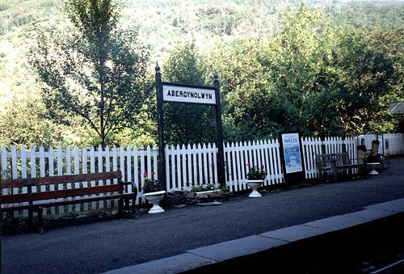
THE CHAMPIONS: The
Body Snatchers (Paul
Dickson: Late 1967)
Sharon and Craig travel to Wales by train to find out what has happened
to Richard.
THE PRISONER: Many
Happy Returns (Patrick
McGoohan: March 1967)
After escaping the village on a raft Number 6 (Patrick
McGoohan)
attempts to navigate his way home across the open sea (coastal
waters
near Abersoch). Several days later he is spotted by a boat (the
Braeda)
but the crew dump him in the water and steal his few possessions.
Number 6 is able to get onto the boat and eventually makes his exit as
they near land (Llanbedrog headland).
(Identified by Mr. and Mrs. Beer, owners of the boat, the
"Braeda" and
expanded by abersochholidays.co.uk)
UFO: Reflections
in the Water (David
Tomblin, 1970)
Straker watches scenes of a "Cornish fishing village" in the studio
cinema (a static shot of Abersoch harbour establishes the
location of
the village).
(Identified by Harry Hicks, March 2021)
GIDEON’S WAY: The
Big Fix (James
Hill:
September 1964)
Stock footage of horses and jockeys riding across the village green in
front of the church on their way to the gallops.
(Spotted by Stephen Carter, June 2007)
Television:
DOCTOR WHO: The Dæmons (April
1971)
THE NEW AVENGERS:
The
Midas Touch (Robert Fuest: Spring 1976)
Purdey (Joanna Lumley) goes to an assault course to
interview SAS
Lieutenant (Jeremy Child) who'd been chief of
security at Pilton.
(Identified by Mike Richardson, December 2012)
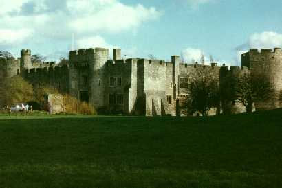
THE ADVENTURES OF ROBIN HOOD:
The Black Patch (??:
1956)
????
(Identified by Gareth Hughes June 2001)
THE ADVENTURES OF ROBIN HOOD:
The Dream (??:
1956)
????
(Identified by Gareth Hughes June 2001)
THE ADVENTURES OF ROBIN HOOD: Season
Three (1957)
Establishing shots of Fitzwalter Hall, Maid Marian's home.
THE AVENGERS: Castle
De'Ath (James
Hill:
August 1965)
Establishing shots for Castle De'Ath itself.
PERFECT SCOUNDRELS:
The Carpetbaggers (John
Gorrie: 1990)
Harry Cassidy (Bryan Murray) and Liam (Hugh
O'Conor) try to interest
Lawrence (James Warwick) in buying their Bentley
during a classic car
rally.
Films:
ROBIN HOOD JUNIOR
(1975)
Television:
COVINGTON CROSS (1992)
THE ADVENTURES OF ROBIN HOOD:
The Impostors (1957)
Establishing shots of castle.
DANGER MAN: The
Sanctuary (Charles
Frend:
1959)
Drake, posing as Michael Liamond, takes a train to Glen Doon.
(Identified by Alan Field)
THE PRISONER: Do
Not Forsake Me Oh My Darling
(Pat Jackson: August 1967)
A slide of The Armed Knight, is part of a set of “36 dreary and badly
shot colour shots” given to Number 6 by Seltzman.
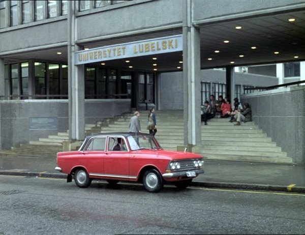
STRANGE REPORT:
7931 Sniper: 'When is your cousin
not?' (Daniel Petrie:
September/October 1968)
(Offices of Buckinghamshire County Council, Walton Street)
Marisha
(Lelia Goldoni) drops Strange (Anthony
Quayle) and Hamlyn Gynt (Kaz
Garas) at the morgue to see the body of Pavel Gordy. Later
Hamlyn is
taken by Marisha to visit The University of Lublin. Here he talks to
the students including Savi (Martin Shaw) and
Olenka (Kika Markham).
Later still Marisha pays a visit to the apartment of Kulik and
discovers that the investigation is not going the way it was intended.
She flees in an attempt to warn Strange.
(Identified by Alan Field, April, 2015)
THE NEW AVENGERS:
The Tale of the Big Why
(Robert Fuest: August 1978)
The episode opens with the release of Bert Brandon (George
Cooper) and
Gambit (Gareth Hunt) from prison (Aylesbury
Young Offender Institute,
Bierton Road).
(Identified by Phil Alder and confirmed by Geoff Dodd,
December 2006)
MAN IN A SUITCASE:
Essay In Evil (Freddie
Francis: June 1967)
Masters goes to check up on his wife in Kilburn (Burns
Square, Ayr).
(Identified by Steven Kelly, May 2005)
THE CHAMPIONS: The
Body Snatchers (Paul
Dickson: Late 1967)
Richard Barret arrives in the village of Porthgerwyn.
(Identified by Philip Langton, April 2005)
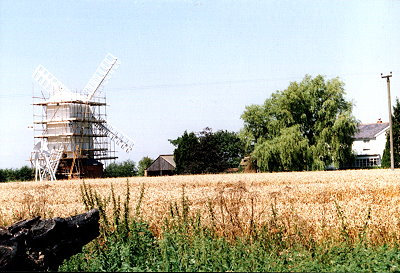
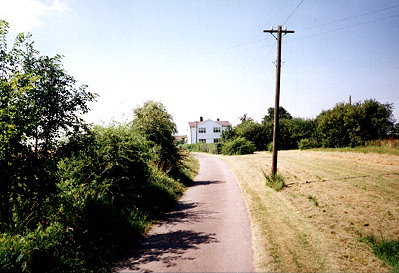
THE PROTECTORS:
Triple Cross (John
Hough: 1972)
Harry and the Contessa use a radio van to trace Charlie to a windmill.
After finding Charlie dead they see his girlfriend arrive.

DEPARTMENT S:
One of Our Aircraft is Empty
(Paul Dickson: 1968)
The house was where Annabel and Jason were staying in Ireland
(Ballygally Castle).
(Identified by Sietse Postma, July 2023)
JOURNEY TO THE UNKNOWN:
Somewhere In A Crowd
(Alan Gibson: 1968)
William Searle looks at an image of the liner ready for its launch on
the TV screen (the image is from the launching of the Oriana
at the
Vickers-Armstrongs shipyards, 3rd November 1959).
GIDEON'S WAY: The
Rhyme and the Reason (John
Gilling: 1965)
Winnie meets Bill at Battersea Park.
THE BARON: Epitaph
for a Hero (John
Moxey:
October 1965)
The villains hide out is in the London fun fair.
THE CHAMPIONS: The
Silent Enemy (Robert
Asher:
April 1967)
Sharon, Craig and Richard enjoy all the fun of the fair.
THE PRISONER: The
Girl Who Was Death (David
Tomblin: November 1967)
The secret agent visits a fairground. Establishing shots of fairground
and shots of various rides (World Backgrounds footage).
JOURNEY TO THE UNKNOWN
(1968)
The fairground is seen in the opening title sequence, concentrating on
the Water Chute.
RANDALL AND HOPKIRK
[DECEASED]: Vendetta
for a Dead Man (Cyril Frankel: Autumn 1968)
Cavello-Smith and Jeannie go on a date to the funfair.
Film:
THE DAY THE EARTH CAUGHT FIRE
(1961)
THE WRONG ARM OF THE LAW (1962)
THE SENTIMENTAL AGENT:
All That Jazz (Charles
Friend, 1962)
Establishing shot of outdoor Belmont Jazz Music festival venue.
(Spotted by Jaz Wiseman, February 2011)
THE AVENGERS: Escape
in Time (Roy
Rossotti:
September 1st 1966)
Tag scene: Steed (Patrick Macnee) and Mrs Peel (Diana
Rigg) get into a
vintage taxi which refuses to start, Steed gets covered in soot from
the exhaust and Mrs Peel drives off through the gate house.
THE AVENGERS: The
Bird Who Knew Too Much (Roy
Rossotti: September 1st 1966)
Tag scene: Steed (Patrick Macnee) and Mrs Peel (Diana
Rigg) board a
vintage two-seater car which sets off backwards and ends up reversing
through the gate house.
THE AVENGERS: The
See-Through Man (Roy
Rossotti: September 1st 1966)
Tag scene: Steed (Patrick Macnee) attempts to start
his vintage Silver
Ghost, but he and Mrs Peel (Diana Rigg) end up
pushing it. The car
starts and speeds towards the gate house with Steed and Mrs Peel
chasing it.
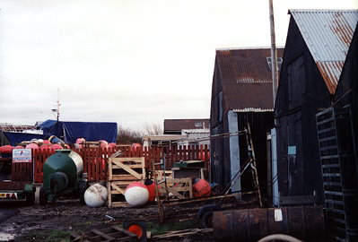
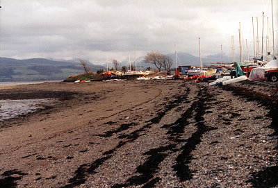
WILLIAM TELL: The
Master Spy (Ernest
Morris:
March 1958)
William Tell leads a daring raid on an Austrian castle (Beaumaris
Castle).
DANGER MAN: It's
up to the Lady (Peter
Maxwell: May 1964)
Drake (Patrick McGoohan) borrows an inflatable
dinghy from a local on
the beach (Gallows Point) in an attempts to reach a
boat to get to the
mainland. When he is in the water his dinghy is overturned by Nicos'
speedboat. Drake hides under the upturned boat until Nicos returns to
shore. Later Drake has to steal a truck which is delivering vegetables
in order to catch the Glovers who are on their way to the Albanian
border (Anglesey Boat Company Boatyard).
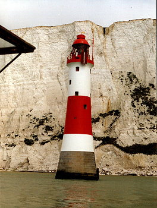
THE PRISONER: Many
Happy Returns (Patrick
McGoohan: March 1967)
Number 6 (Patrick McGoohan) is washed up on the
beach and starts to
climb the cliffs. After leaving the gypsy campNumber 6 comes across a
police road block (the A2103) and, thinking they
are looking for him,
he jumps into the back of a passing lorry.
THE PRISONER: Do
Not Forsake Me Oh My Darling
(Pat Jackson: August 1967)
A slide of Beachy Head from a set of “36 dreary and badly shot colour
shots” given to Number 6 by Seltzman.
THE PRISONER: The
Girl Who Was Death (David
Tomblin: 16th November 1967)
The secret agent gazes down on Schnipps' lighthouse. Later he escapes
from the lighthouse in a motor boat before it explodes.
Film:
HOPSCOTCH (1980)
Television:
THE
CURE: Video for 'Close
to Me' (1985)
THE LIFE AND LOVES OF A SHE DEVIL (1986)
STILL CRAZY LIKE A FOX
(1987)
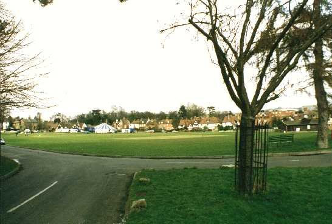
THE PRISONER: The
Girl Who Was Death (David
Tomblin: November 1967)
Establishing shots of the cricket match on a village green.
(Spotted by Sam Denham, 1998)
THE PERSUADERS!:
The Man in the Middle
(Leslie Norman: 1971)
The cottage where the secrets are to be traded as the episode begins
(Sygyn-Bâch, 0.5km east of Pont-y-Felin).
(Identified by Sietse Postma, April 2022)
DANGER MAN: You’re
Not In Any Trouble, Are you?
(Don Chaffey: February 1965)
John Drake looks out from his hotel room in Rome to check the time by a
nearby clock tower (Albert Memorial Clock Tower, Victoria
Street/Queen's Square).
(Identified by Paul Stroud, June 2012)
DANGER MAN: Whatever
Happened To George Foster? (Don Chaffey: November 1964)
The home country home of Mrs George Foster.
(Identified by Sietse Postma, February 2025)
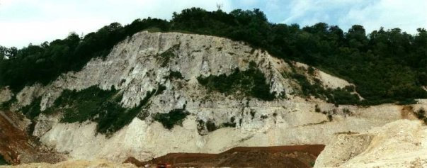
THE BARON: Something
for a Rainy Day
(Cyril Frankel: November 1965)
Max Holder's car is forced off the road and drives over a cliff.
Mannering and Cordelia scramble down the cliff to investigate.
THE BARON: Enemy
of the State (Jeremy
Summers: December 1965)
The secret police drive Mannering
towards the
border in a white Citroen.
THE BARON: And
Suddenly You're Dead (Cyril
Frankel: January 1966)
Peter Franklin's red car goes out of control on a mountain road and
runs off a cliff.
THE BARON: Time
To Kill (Jeremy
Summers:
May 1966)
Christina's white Jaguar's brakes fail and she is unable to prevent it
from crashing from a cliff.
THE CHAMPIONS: A
Case of Lemmings (Paul
Dickson: Summer 1967)
An Interpol agent drives his car along a precipitous road and takes his
hands of the wheel allowing it to run off the road over a cliff.
THE CHAMPIONS: The
Final Countdown (John
Gilling: Early 1968)
The pilot is unable to do anything as his car careers over a cliff.
DEPARTMENT S: Who
Plays the Dummy? (John
Gilling: Autumn 1968)
Jason and Annabelle's white Jaguar is taken over by remote control and
they are able to jump clear just as the car flies over a cliff edge.
DEPARTMENT S: The
Man Who Got a New Face
(Cyril Frankel 1968)
Gerhard forces Monique Grelle off the road and her red car crashes down
a cliff.
RANDALL AND HOPKIRK
[DECEASED]: It's
Supposed to be Thicker Than Water (Leslie
Norman: Autumn
1969)
Johnny Cracken's borrowed Jaguar races out of control over the cliff.
JASON KING: Toki
(Jeremy
Summers:1971)
A drunken Olivier is unable to control the car into which he has been
put and careers over a cliff.
THE PERSUADERS!:
The Ozerov Inheritance
(Roy Ward Baker: October 1970)
Monsieur Ganguin is knocked out and his red car is sent careering over
a cliff edge.
THE ADVENTURER:
Icons are Forever
(Cyril Frankel:1972)
Julian Hunt is killed when his white jaguar crashes over a cliff.
HAMMER HOUSE OF MYSTERY AND
SUSPENSE: Black Carrion
(John Hough: Spring 1984)
The villagers are seen pushing a white Jaguar in to a quarry.
Film:
CROSSPLOT (1969)
THE TAMARIND SEED
(1974)
Television:
DOCTOR WHO: Genesis of the Daleks
(January
1975)
DOCTOR WHO: The
Deadly Assasin (July
1976)
BLAKE’S 7: Hostage (1979)
BLAKE’S 7: Time Squad
(September 1977)
BLAKE’S 7: Moloch (1980)
BLAKE’S 7: Power (1981)
SPITTING IMAGE 1993)
FATHER TED: Hell 1996)
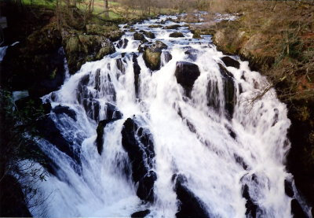
THE SAINT: The
Golden Journey (Robert
S.
Baker, October 1962)
On their walk to Torremolinos Simon and Belinda have to ford a river
with a waterfall (Swallow Falls, near Betws y Coed).
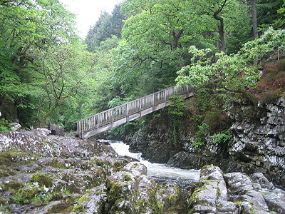
DANGER MAN: It's
up to the Lady (Peter
Maxwell: May 1964)
Drake (Patrick McGoohan) takes Paula Glover to a
spot away from the
hotel (The Miner’s Bridge over Afon Llugwy, near Betws y Coed).
He
tells her that he will bring her husband Charles to the spot so they
can talk about his defection without interference.
THE SAINT: Where
the Money Is (Roger
Moore: Summer 1968)
Using a series of photographs as a guide, Simon Templar (Roger
Moore)
retraces the route (along the A1 south of Biggleswade)
to the
kidnappers hideout. He finds his next clue, a water tower (Toplers
Hill
WaterTower).
(Identified by David Harris, April 2009)

THE NEW AVENGERS:
Cat Amongst the Pigeons
(John Hough: June 1976)
Turner (Matthew Long) is chased to Steed's (Patrick
Macnee) house and
manages to tell Steed, Purdey (Joanna Lumley) and
Gambit (Gareth Hunt)
about Waterlow. Later Gambit drops Steed off at his house but they have
been followed by Zarcardi (Vladek Sheybal) who
leaves a bird of prey in
Steed's Range Rover.
THE NEW AVENGERS:
Target (Ray
Austin:
July 1976)
Steed (Patrick Macnee) and Gambit (Gareth
Hunt) collect George Myers
(Malcolm Stoddard) from Purdey's car and frog march
him into Steed's
House.
THE NEW AVENGERS:
House of Cards (Ray
Austin: May 1976)
David Miller (Murray Brown) rides over to Steed's (Patrick
Macnee)
house to warn him about the House of Cards, but he is shot as he
arrives. Later Steed leaves his house on his way to check on Professor
Vasil, but his Jaguar is followed by Perov in a helicopter. Suspecting
a trick Purdey (Joanna Lumley) and Gambit (Gareth
Hunt) follow in their
MGB.
THE NEW AVENGERS:
Faces
(Ray Austin: July 1976)
Terrison (Richard Leech) drives the fake Steed (Patrick
Macnee) to
Steed’s mansion so that he can kill and replace him.
(Spotted by Mike Richardson, October 2012)
THE NEW AVENGERS:
Tale of the Big Why
(Robert Fuest: August 1978)
Roach and Poole monitor Steed, Purdey and Gambit's conversation from
the undergrowth and watch as they leave in a white Range Rover.
THE PROFESSIONALS:
The Rack (Peter
Medak:
December 1978)
CI5 agents Benny (Trevor Adams), Cowley (Gordon
Jackson), Doyle (Lewis
Collins) and Bodie (Martin Shaw) arrive
at the home of John Coogan
(Michael Billington) and Paul Coogan (Christopher
Ellison) for a drugs
raid.
Films:
SEE NO EVIL/BLIND TERROR
(1971)
TALES THAT WITNESS MADNESS
(1972)
THE SPIRAL STAIRCASE
(1975)
HOLOCAUST 2000/THE CHOSEN
(1977)
THE STUD (1978)
THE ROYAL ROMANCE OF CHARLES AND
DIANA (1982)
(thanks to Greg King for this list)
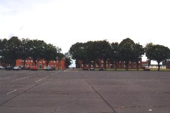
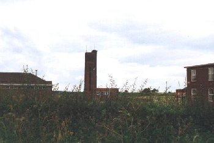
THE AVENGERS: The
Town Of No Return (Peter
Graham Scott: November 1964)
Steed (Patrick Macnee) visits the RAF base at
Little Bazeley (The
National Construction College, formerly RAF Bircham Newton, B1155)
and
makes a fatal discovery concerning Piggy Warren.
Note: Unused footage of Emma Peel (Elizabeth Shepherd)
also shot here.
Found by Dave Prudence and John Stewart
THE ADVENTURES OF ROBIN HOOD: Ransom (Terrence Fisher: 1957)
Television:
DOCTOR WHO: The
King's Demons (1982)
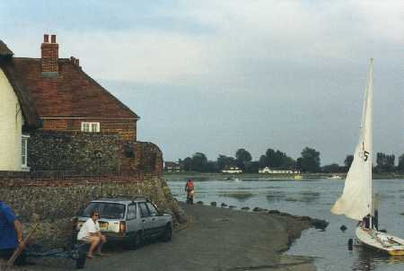
THE SAINT: The
Gentle Ladies (Jeremy
Summers: 1963)
Establishing shots and background plates of Bosham Village, Bosham
Church and Bosham Quay, shot from Bosham Quay. Shots of the Blue Anchor
Pub, and Bosham Lane looking South towards the wood cabin.
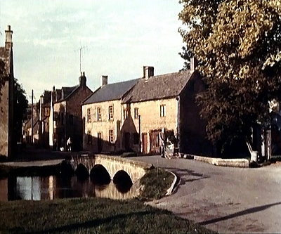
THE BARON: The
Man Outside (Roy
Baker:
September 1966)
The Scotish village of Cairnstorn
THE SAINT: The
Elusive Ellshaw (John
Moxey: 1963)
Kenneth Ripwell leaves his father's house for London in his sports car
he is followed by Simon in his Volvo. Simon manages to loose him at a
railway crossing.
(Identified by Alan Field, March 2010)
GIDEON'S WAY: The
Alibi Man (Cyril
Frankel:
February 1965)
Racing driver, Bruce Carroway, wins yet another race.
THE SAINT: The
Chequered Flag (Leslie
Norman: February 1965)
Simon becomes involved with the Marshall racing team during a race at
Brands Hatch. His adventures cumulate with Simon taking over as driver
for the team.
THE SAINT: The
Fast Women (Leslie
Norman:
September 1966)
Simon Templar is at Brands Hatch to watch the deadly rivals Cynthia
Qulillen and Teresa Montesino racing against each other.
THE AVENGERS: Dead
Man's Treasure (Sidney
Hayers: June 1967)
Sir George Benstead shows Steed and Mrs Peel the machine that simulates
racing on the Brands Hatch Circuit.
THE PERSUADERS!:
Someone Waiting (Peter
Medak: 1971)
Lord Sinclair wins the race in his Sinclair Special.
THE SAINT: The
Imprudent Politician (John
Moxey: July 1964)
Janet Waites (Jennifer Wright) arrives at the
moorings (Ferry Road) in
her Mini and she makes her way to the Jolly 'D' as instructed by the
blackmailers where she finds Denise Grant (Justine Lord)
waiting for
her. Later the Saint arrives in his Volvo looking for the Jolly 'D' and
Alex Morgan (Mike Pratt) is sent to deal with him.
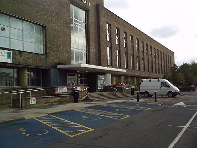
THE PROTECTORS:
Balance of Terror
(Jeremy Summers: Autumn 1972)
Chino drives The Contessa to The International Scientific Forum to
speak to Professor Grodny. Later The Contassa and Harry Rule arrive
just after Professor Alexander Schelpin has left.
(Identified by Wyn Roberts, September 2004)
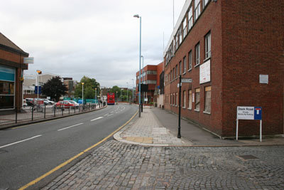
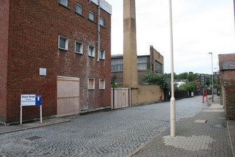
THE AVENGERS: Sell
Out (Don Leaver:
June 1962)
Steed and Doctor King drive to Heathrow Airport in an AC sports car
(they pass was the now demolished Firestone Factory, Great
West Road).
(Identified by Michael Richardson, April 2013)
THE SAINT: The
Helpful Pirate (Roy
Baker:
March 1966)
Simon Templar is taken at gunpoint from Heathrow Airport to this
typewriter factory (Brentford High Street / Dock Road)
.
(Identified by Alan Field, June 2007)
MAN IN A SUITCASE:
The Sitting Pigeon
(Gerry O'Hara: March 1967)
After leaving prison Rufus Blake and McGill exchange a taxi for
McGill's car and drive through London (back projection filmed
along the
Great West Road, Brentford between Syon Lane and Boston Manor Road).
(Spotted by Stephen Carter, June 2001)
MAN IN A SUITCASE:
Somebody Loses...Somebody Wins
(John Glen: April 1967)
McGill (Richard Bradford) and Ruth Klinger (Jacqueline
Pearce) arrive
by taxi for a meeting with Johann Liebkind (Brentford Gas
Works,
Brentford High Street – demolished). They make their way over
to
Leibkin’s house followed by East German agents. Johann Liebkind escapes
from McGill and is shot by East German agents. McGill leaves the house
by a window and looks for a car left for him by American intelligence.
McGill finds the car and drives off despite being shot at.
(Spotted by Alan Field, September 2007)
THE BARON: The
Edge of Fear (Quentin
Lawrence, May 1966)
Jordan drives Mannering to the waterworks pump house (Kew
Bridge Steam
Museum, Green Dragon Lane £) where Montford and Colbert are
waiting for
him to identify the stolen artefact.
THE PERSUADERS!:
Anyone Can Play (Leslie
Norman: 1971)
Overhead establishing shot of the Palace Pier (panning to show what is
now the entrance to the SeaLife Centre). Danny Wilde (Tony Curtis)
and Brett Sinclair (Roger
Moore) are walking
along the promenade by the Palace Pier (Madeira Drive, past the
original Concorde Club and steps they goes down are just to the east of
the Palace Pier, directly opposite the SeaLife Centre) when they
notice
they are being
followed by two men. Danny and Brett attack the men under the Palace
Pier only
to find that they are policemen who are there to escort them to a
meeting in the West Pier. Danny and Lyn drive up West Street and past
the now pedestrianised Cranbourne Street pursued by undercover agents
in a transit van. Both vehicles turn right into North Street at the
Jubilee Clock Tower. The drive past Lloyds Bank, 171-173 North Street.
Danny and Lyn drive down the road past what is now Coole Bevis Law
Solictors (two white gateposts), a police motorcycle leaves the
carpark
of this building and follows Danny and Lyn down Prince Albert Street.
Danny and Lyn drive past the Royal Palace. The police motorcycle pulls
into Edward Street. 8. The Railway Bell, Surrey Street - Danny and Lyn
drive past the Railway Bell pub and turn left into Guildford Road.
(Locations details provided by Jaz Wiseman, 2014)
Films:
BRIGHTON ROCK (1947)
UNDER SUSPICION (1991)
THE NEW AVENGERS:
Sleeper (Graeme
Clifford: September 1976)
The gang; Brady (Keith Buckley), Chuck (Mark
Jones), Bart (Prentis
Hancock), Phil (George Sweeney), Bill (Leo
Dolan) and Ben (David
Schofield) break into Payne’s Bank Ltd. Purdey’s car is heard
by Tina
(Sara Kestelman) and she reports this to the gang.
Purdey (Joanna
Lumley) is cornered by the gang and looks for somewhere to
hide. Steed
(Patrick Macnee) and Gambit (Gareth Hunt)
arrive just in time to chase
after the coach carrying the gang to London.
(Source: Nick Williams and Chris Bentley)
Film:
A CLOCKWORK ORANGE
(1971)
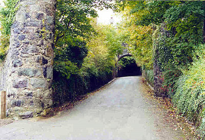
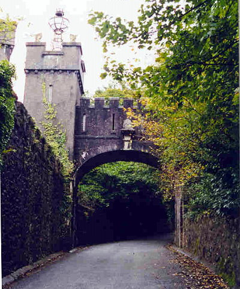
THE PERSUADERS!:
A
Death In the Family (Sidney Hayers: 1971)
Brett drives Danny, in his Aston Martin, to Uncle Angus' Scottish
castle.
(Identified by Andrew Turford)
DANGER MAN: The
Paper Chase (Sidney
Cole:
1966)
Eddie Geld sends John Drake (Patrick McGoohan) to a
safe house run by
Madame Nandina. He is met at the door by Canesi (Sandor Ellis).
Later
Drake follows Laprade (Ferdy Mayne) from the house.
(Identified by Greg Mishevski, aka SainT on the Britmovie Forum,
February , 2010)
GIDEON’S WAY: The
Lady-Killer (Leslie
Norman:
September 1964)
Robert Carne (Ray Barrett) stops off at a small
town to pick up the key
for the country cottage where he and Marion Grove (Rosemary
Leach) are
to stay (Market Hill, Buntingford).
(Identified by Alan Field, December 2007)
THE PRISONER: Arrival
(Don
Chaffey: December 3rd, 1966)
As Number Six (Patrick McGoohan) attempts to leave
The Village in a
Village taxi, Orange Alert is called, and Rover blocks the vehicle’s
path. Rover strikes and Number Six is thrown from the taxi. He attempts
to fend off Rover, but he is smothered and falls to the ground. Rover
bounces in triumph on the prone body of its victim.
(Spotted by Gareth Hughes, February 2021, thanks to
Tina
Jerke and Rick Davey)
THE PRISONER: Dance
of the Dead (Don
Chaffey: December 3rd, 1966)
Under the cover of darkness Number Six
(Patrick McGoohan) runs to the beach where Rover
confronts him. Number
Six runs down the beach, but Rover stays ahead of him every step of the
way. Exhausted, Number Six drops to his knees and Rover rushes away.
(Spotted by Gareth Hughes, February 2021, thanks to Tina Jerke
and Rick
Davey)
THE PRISONER: The
Chimes of Big Ben (Don
Chaffey: December
3rd, 1966)
Rover races towards the makeshift sailboat across the sea.
Later, Rover retreats after being shot by Karel and losing it's
prey.
(Thanks to Rick Davey, Gareth Hughes and Tina Jerke, March
2021)
Film:
DUNKIRK (1958)
THE LONELINESS OF THE LONG
DISTANCE RUNNER (1962)
SCARECROW OF ROMNEY MARSH (1963)
CARRY ON......... FOLLOW THAT CAMEL
(1967)
JOANNA (1968)
CAN HEIRONYMUS MERKIN EVER FORGET
MERCY HUMPPE AND FIND TRUE HAPPINESS? (1969)
Television:
DRAMARAMA: Snap
(1987)
THE AVENGERS: A
Sense of History (Peter
Graham Scott: January 1966)
Establishing shot of St. Bodes(Corpus Christi College).
(Identified by Geoff Dodd, September 2009)
THE CHAMPIONS: The
Ghost Plane (John
Gilling:
Autumn 1967)
Sharron and Craig (Stuart Damon) go to interview
Dr. John Newman at
Cambridge University (Kings College and Clare College).
Later Newman's
secretary, Vanessa (Hilary Tindall) leaves Clare
College and walks to
her car parked on Trinity Lane. As she drives off and is followed by
Sharron's in her Mercedes. Craig leaves Clare and he is surprised to
find the car gone. As Stuart walks down Bridge Street he gets a psychic
message to telephone Richard. He runs across the road from St. John's
College to use the telephone box. After being told that Sharron is in
danger he persuades a passing motorist to give him a lift in a
Volkswagen.
JOURNEY TO THE UNKNOWN:
Jane Brown's Body (Alan
Gibson: 1968)
Paul Amory (David Buck) takes Jane Brown (Stephanie
Powers) to see the
college where he works. They drive into town along King’s parade. After
thinking she has lost David, Jane makes her way back through town (via
Cambridge Market and Market Street) to David’s college (Corner
of
Sidney Street and Jesus Lane) and attempts suicide in his
lodgings
(Sidney Sussex College)
(Identified by Geoff Dodd, September 2009)
THE ADVENTURER:
Skeleton in the Cupboard
(Cyril Frankel)
Gene Bradley is called to Cambridge by Sir Richard McKenzie to discuss
funds apparently stolen by Professor Ballard (stock footage
of King’s
College and Clare Bridge).
Television:
CODENAME PORTCULLIS
(1969)
DOCTOR WHO: Shada
(1979)
CHOCKY'S CHALLENGE (1985)
THE NEW AVENGERS:
The Eagle's Nest
(Desmond Davis: April 1976)
George Stannard (Brian Anthony) is pursued across
St. Dorca by Karl
(Frank Gutliff) and Hara (Sydney Bromley)
using fishing rods as
weapons, he is able to get to a motorboat, but Karl is able to catch
him on the cheek with a poison hook as he leaves the harbour.
THE ADVENTURES OF ROBIN HOOD:
The Friar's Pilgrimage
(Arthur Crabtree: 1956/57)
Friar Tuck takes a pilgrimage to Canterbury
THE NEW AVENGERS:
The Three Handed Game
(Ray Austin: 1976)
Larry (Michael Petrovitch) manages to trace
Juventor (David Greif) to
house named Cantley where he is demonstrating the mind swapping device
to Colonel Meroff (Terry Wood) using Ransom (David
Wood) as a
guinea-pig. Larry is captured by Ivan (Tony Vogel)
but escapes to lead
Steed (Patrick Macnee), Gambit (Gareth
Hunt) and Purdey (Joanna Lumley)
back to the house.
THE PRISONER: A Change of Mind (Patrick McGoohan: March 1967)
Number
6 goes into the woods to consider his unmutual status and ponders the
freedom of a passing birds has he gazes across the bay..
(Identified by Sietse Postma, April 2025)

DEPARTMENT S: Handicap
Dead (John
Gilling:
July 1968)
Colindale Golf Course, Scotland - June 6th - An important golf
tournament and Johnny Collins fails to turn up for his next round and
is disqualified.
(Identified by Geoff Dodd, December 2008)
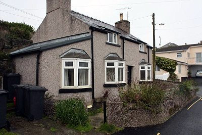
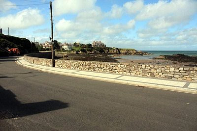
DANGER MAN: It's
up to the Lady (Peter
Maxwell: May 1964)
Drake and Nicos both notice a newcomer to the village arriving by ferry.
DANGER MAN: That's
Two of Us Sorry (Quentin
Lawrence: June 1964)
John Drake (Patrick McGoohan) and Sheila Sutherland
(Francesca Annis)
set off for the island of 'Herta' on a fishing boat. Later Drake
follows Sheila Sutherland down to the beach where she meets with Donald
McKinnon (Brian Phelan) who arrives in his motor
boat (the construction
work on Wylfa nuclear power station can be seen in the background).
John Drake and Angus McKinnon (Duncan Lamont)
arrive back at Loch Broom
from the island of 'Herta' on a fishing boat. They are met by
Braithwaite and two policemen. John Drake bids farewell to Angus
McKinnon outside Braithwaite’s home. McKinnon is taken away by two
policemen in their police car.
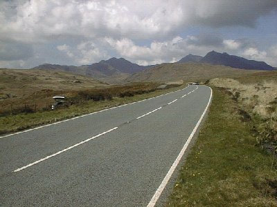
DANGER MAN: The
Professionals (Michael
Truman: 1964)
After escaping from the sanatorium, Desmond Pearson and Drake drive to
the border (A4086 between Pen-y-Gwyryd and Capel Curig).
(Identified by Janet Kaiser)
THE ADVENTURES OF ROBIN HOOD:
The Haunted Mill
(Lindsay Anderson: 1956)
(source: www.robinhood-tv.co.uk)
THE ADVENTURES OF ROBIN HOOD:
The Road in the Air
(Robert Day: 1957)
(source: www.robinhood-tv.co.uk)
THE AVENGERS: Build
a Better Mousetrap (Peter
Hammond: August 1963)
Mrs. Gale and a group of motorcyclists stop at Vernon watermill to ask
the way. They are rebuffed by the Peck sisters, Cynthia and Ermintrude,
who threaten to put a curse on them.
DANGER MAN: The
Gallows Tree (Michael
Truman: 1959)
John Drake nearly runs his Land Rover over this cliff.
DANGER MAN: The
Brothers (Charles
Frend:
1959)
An American plane crashes off the cast of Sicily.
THE PRISONER: Many
Happy Returns (Patrick
McGoohan: 1967)
Number 6 (Patrick McGoohan) is taken by James (Donald
Sinden) and
Thorpe (Patrick Cargill) to an airport from which
Number 6 takes a jet
to search for The Village. James and Thorpe drive away in their Rolls
Royce not knowing that the place of the jet's pilot has been taken by a
man who entered the airport, in a milk float, disguised as a milkman.
THE CHAMPIONS The
Search (Leslie
Norman: April 1967)
Establishing shot of submarines docked at night.
(Identified by Michael Richardson, March 2022)
THE SAINT: The
Man Who Could not Die
(Roger Moore, May 1965)
The rescue party is successful in rescuing the trapped potholers.
THE CHAMPIONS: The
Survivors (Cyril
Frankel:
January 1968)
Nemesis agent, Sharron Macready, passes the time in an English pub (The
White Goose) by playing a game of darts.
(Identified by John Mann, December 2002)
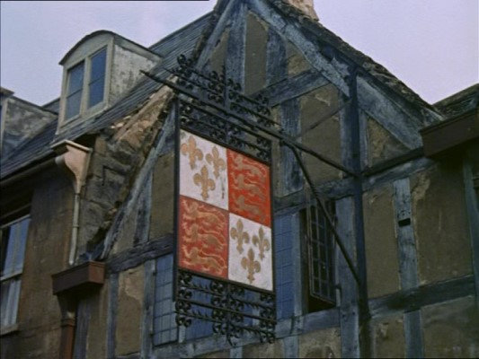
THE CHAMPIONS: The
Final Countdown (John
Gilling: January 1968)
Sharron Macready and Richard Barrett go to an pub to interview the
landlord about the German plane he shot down in the last days of the
war (High Street, Chipping Campden).
THE SENTIMENTAL AGENT:
Express Delivery
(Charles Frend, 1963)
Carlos Thompson (Carlos Varella ) drives along a
road (Staple Hill
Chobham Common and then Burma Road Chobham Common) where he
is stopped
at a checkpoint.
(Identified by Gordon Thompson, 8th October 2012)
THE SENTIMENTAL AGENT:
Finishing School (Harry
Fine, 1963)
Bill Randall (John Turner) and Chin (Burt
Kwouk) turn off the road
(Staple Hill Chobham Common).
(Identified by Gordon Thompson, 8th October 2012)
DANGER MAN: Dangerous
Secret (Stuart
Burge:
1965)
Drake follows M. Barbier from his antiques shop using a tracking device
(Burma Road Chobham Common).
(Identified by Gordon Thompson, 8th October 2012)
THE SAINT: The
Old Treasure Story (Roger
Moore, May/June 1965)
After the funeral of Captain Bill, the Saint remains in Cornwall.
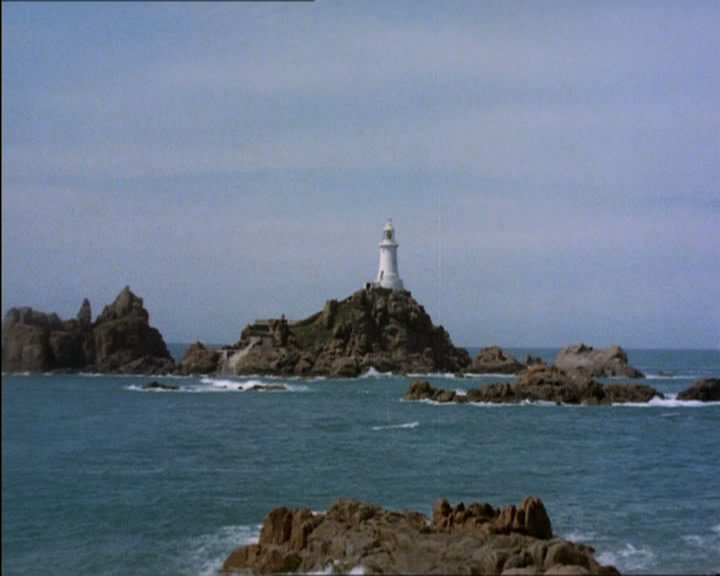
THE CHAMPIONS: The
Silent Enemy (Robert
Asher:
April 1967)
Two lighthouse keepers spot a submarine off shore that leads the
Champions into a deadly underwater adventure.
Identified by Paul Mitchell
RANDALL AND HOPKIRK
[DECEASED]: Vendetta
for a Dead Man (Cyril Frankel: Autumn 1968)
Intent on celebrating the anniversary of his incarceration, Jansen
takes Jean Hopkirk to the top of a precipitous cliff with the intent of
throwing her into the sea.
DEPARTMENT S: Soup
of the Day (Leslie
Norman:
Spring 1969)
Fernando Segres is taken from Lisbon to be thrown into sea.
Cornbury
Park,
Charlbury, Oxfordshire (Private House)
INSPECTOR MORSE:
Greek Bearing Gifts
(Paul Wheeler: 1990)
Georgian mansion.
(Identified by Ken Ledham 2005)
Television:
BLAKE'S 7: Rumours
of Death (1980)
THE NEW AVENGERS:
The Lion And The Unicorn
(Ray Austin: 1977)
Steed and Purdey, in Purdey's TR7, are chased by The Unicorn's men
around a sharp bend near the coast (just South of Crackington
Haven).
RETURN OF THE SAINT:
Assault Force (Peter
Sasdy: 1977)
Simon organises the kidnapping of an Asian diplomat at “Midlands East”
Airport.
(Identified by Robert Truman of Control
Towers and Nigel Brooks, June 2002)
INSPECTOR MORSE:
Driven to Distraction
(Sandy Johnson: 1989)
Morse (John Thaw), Lewis (Kevin Whately)
and Sergeant Maitland (Mary Jo
Randle) go to visit the Oxford Driving Centre (The
Transport and Road
Research Laboratory). They find a driving instructor (Kate
Doherty)
teaching a student and ask to see Derek Whittaker (David
Ryall) just as
he arrives back with his student, Jimmy (Jake Wood).
Later Morse
returns for a series of lessons with Whittaker.
THE CHAMPIONS: The
Dark Island (Cyril
Frankel:
February 1967)
Richard Barrett parachutes down to the island to act as support for
Sharron and Craig’s plan.
(Identified by Colin Jordan, March 2008)
DEPARTMENT S: The
Duplicated Man (Paul
Dickson: Spring 1969)
Jason King jumps from a plane with a parachute in order to see where
Anthony James Harvey could possibly have landed.
(Identified by Colin Jordan, March 2008)
UFO: The
Responsibility Seat (Alan
Perry: August 1969)
Ed Straker (Ed Bishop) escorts Jo Fraser (Jane
Merrow) back to her car
after she has interviewed him at the Harlington-Straker Studios
(Crystal Palace National Sports Centre). She watches
him walk away to
his duties on the back-lot then makes her way back to Straker's office.
(Spotted by Sam Denham, January 2013)
Later Ed Straker (Ed Bishop) chases Jo Fraser (Jane
Merrow) in his car
after she flees from the motel after being confronted by Straker. After
a short chase Straker forces Jo off the road (Crystal Palace
Race
Circuit, disused since 1972 ).
(Identified by Ian Press October 2005 and confirmed by
Marishka von
Saatz)
THE SAINT: Escape
Route (Roger
Moore:
October 1966)
Simon Templer arrives is sent to Dartmoor Prison to serve his ten-year
sentence.
THE NEW AVENGERS:
The Lion And The Unicorn
(Ray Austin: 1977)
Steed and Purdey, in Purdey's TR7, are chased to a quarry by The
Unicorn's men but manage to out drive the car that is following them
and it crashes off the road and into the quarry floor below.


DANGER MAN: The
Black Book (Michael
Truman:
1965)
Sir Noel Blanchard (Griffith Jones) arrives at the
river with his
blackmail payment and finds a note attached to a dog (access
road from
Walton Lane to South bank of Desborough Cut, Desborough Cut Lower
Bridge visible). After a dog swims off with Sir Noel
Blanchard’s
blackmail payment, Drake gives chase across a bridge (Desborough
Cut
Upper Bridge from Desborough Island to Walton Lane). Later
Drake
watches as one of Simone’s blackmail victims delivers his payment by
throwing it from a boat. Later still, one of Simone’s blackmail victims
parks his car by a bridge (Desborough Cut Upper Bridge)
to drop off
another blackmail payment.
DANGER MAN: That's
Two of Us Sorry(Quentin
Lawrence:
June 1964)
John Drake drives to Loch Broom Atomic Power Station (A470
after
Dolwyddelan Castle before Blaenau Festiniog).
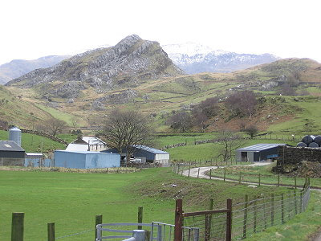
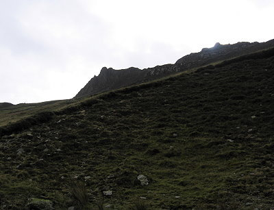
THE SAINT: The
Golden Journey (Robert
S.
Baker, October 1962)
Simon Templer and Belinda start to cross the mountains on their journey
towards Torremolinos.
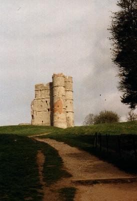
THE SAINT:
Little Girl Lost
(Roy Baker: Aug/Sep 1966)
The VW Beetle carrying Mullins, Brine and their kidnap victims arrives
at their hide out.
THE SAINT: Flight
Plan (Roy
Baker:
August/September 1966)
Simon, piloting the Osprey, crosses the English coastline (just
east of
Dover and swing towards the north of the town).
THE PRISONER: Do
Not Forsake Me Oh My Darling
(Pat Jackson: August 1967)
Number 6 takes his Lotus across the English Channel on the ferry “Maid
of Kent”.
RETURN OF THE SAINT:
The Diplomat’s Daughter
(Charles Crichton: 1978)
Simon Templar and Marie arrive in Dover hot on the trail of the
drug-filled Rolls Royce. Marie steals Simon’s Jaguar and drives from
the ferry terminal.
THE PROTECTORS:
The Number Game.
(Jeremy Summers: 1972)
Harry Rule (Robert Vaughn) and The Contessa Di
Contini (Nyree Dawn
Porter) travel to the hovercraft port to watch if their
contact has
arrived.
(Spotted by Jaz Wiseman, November 2001)
THE HUMAN JUNGLE:
The Man Who Fell Apart
(Roy Baker: July 1964)
On his way to Guildford, Dr Roger Corder drives his Humber Hawk along a
suburban road (Whipsnade Road/West Street).
(Identified by Geoff Dodd, March 2010)
DANGER MAN: The
Gallows Tree (Michael
Truman: 1959)
The car of an agricultural machinery salesman is stolen in the Highland
of Scotland. Later Craig (Ewan Rogers) tries to
knock John Drake
(Patrick McGoohan) over a cliff in his Land Rover.
(Confirmed by Jon Scott, December 2002)
THE HUMAN JUNGLE:
The Man Who Fell Apart
(Roy Baker: July 1964)
Establishing shots of Garthside Kennels, East Langdon (Icknield
Way
Farm). Joy South (Rita Tushingham) takes
food to the dogs and is joined
by Patrick Grant (Alan Dobie), who suggests that
they go on a picnic.
Seeing South’s assistant Sam (John Rae)
approaching, Grant asks him to
look after the place until they return. Later, after walking some of
the dogs on the moor Joy South and Patrick Grant return. Some days
later, Joy is once again on the moor walking some of her dogs, when she
sees an E-Type Jaguar heading towards the kennels and thinking that
Patrick has returned she rushes back there. Sometime later, Corder
(Herbert Lom) pays Joy a visit parking his Humber in
front of the gates
to the boarding kennels he accompanies Joy who walking some of her dogs
on the Downs. In autumn, Sam catches the pregnant Joy doing some manual
work and offers to do it for her, just as Patrick arrives in his Ford
Consul. That night a distressed Joy runs from the kennels, followed by
Patrick.
THE PRISONER: Living
in Harmony (David
Tomblin: September 1967)
After his resignation, the Sheriff (Patrick McGoohan)
is stopped by six
gunmen (Bill Nick, Les Crawford, Frank Maher, Max Faulkner,
Bill
Cummings and Eddie Eddon) and carried off. After escaping
from Harmony,
the Sheriff is lassoed by three horsemen and dragged back to town.
Later the Sheriff rides out and captures the two men watching the road.
DEPARTMENT S: Who
Plays the Dummy? (John
Gilling: Autumn 1968)
The NATO convoy travels through Spain (A4541)
unaware of the danger
they have just avoided.
PROTECTORS: Wheels
(David
Tomblin: 1972)
The route taken by the rally car driven by Harry and Paul includes a
section of the Downs and the A4541
THE AVENGERS: Who's
Who??? (John
Moxey: April
1967)
Lola and Basil watch some film of Emma Peel (Diana Rigg)
including a
sequence of her riding along a beach (filmed during 29th
September 1965
photo shoot at Saint Mary's Bay).
H.G.WELLS' INVISIBLE MAN:
Man in Disguise
(Quentin Lawrence/Peter Maxwell: 1959)
Brady drives across the railway crossing (Level Crossing,
Summer Road)
with Sally and turns onto Hampton Court way. Their pursuers, in a
Sunbeam Rapier, are caught at the level crossing and have to wait for
the gates to open.
THE CHAMPIONS: A
Case of Lemmings (Paul
Dickson: Summer 1967)
Claudine (Jeanne Roland) walks down to the river,
walks across the weir
(connecting East Molesley Lock with Ash Island) and
then throws herself
into the water.
(Identified by Jon Webb confirmed by Wyn Roberts)
DANGER MAN: The
Sanctuary (Charles
Frend:
1959)
Drake, posing as Michael Liamond, takes a train which crosses the Forth
Bridge on it way to Glen Doon
(Spotted by Paul Stroud, June 2014).
THE BARON: Enemy
of the State (Jeremy
Summers: December 1965)
A British agent is held by the secret police in this Easter European
Country.
THE PROTECTORS:
Shadbolt (John
Hough:
1973)
Shadbolt (Tom Bell) looks down on Edinburgh from
Holyrood Park. He
visits the Forth Road Bridge and High Street. He walks towards South
Learmonth Avenue with Fettes College in the background. He walks down Melville Street
towards St Mary's Cathedral and at Horse Wynde he receives a telephone
call. After walking down the steps of The Vennel he calls into a
newsagents on Grassmarket, near where it meets West Port, to collect a
package. At Calton New Burial Ground he opens the package and then
catches a train from Waverley Station.
(additional research by Paul Stroud, May 2009)
THE ADVENTURER:
Action! (Barry
Morse:
1972)
Gene Bradley (Gene Barry) arrives at Waverley
Station. He steps into a
waiting car and is chauffeured through the city.
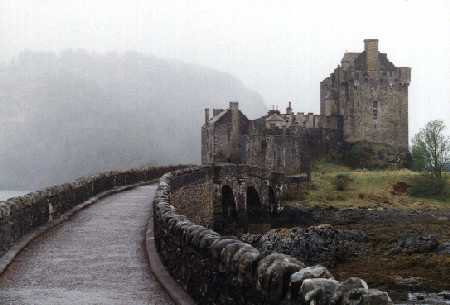
DANGER MAN: The
Relaxed Informer (Anthony
Bushell: 1960)
The island of the Paxites.
(Source: Chris Bentley)
THE SAINT: The
Convenient Monster (Leslie
Norman: February 1966)
The Saint discusses the castles of Scotland.
THE NEW AVENGERS:
The Eagle's Nest
(Desmond Davis: April 1976)
Stannard (Brian Anthony) is pursued across St.
Dorca by Karl (Frank
Gutliff) and Hara (Sydney Bromley) using
fishing rods as weapons.
Purdey (Joanna Lumley) and Steed (Patrick
Macnee) both land on the
island and are later joined by Gambit (Gareth Hunt)
as they escort
their prisoners from the castle.
HIGHLANDER
(1986)
THE WORLD IS NOT ENOUGH
(1999)
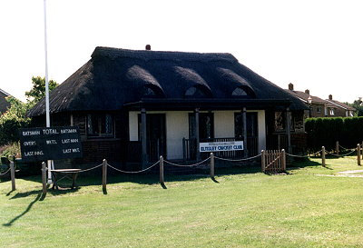
THE PRISONER: The
Girl Who Was Death (David
Tomblin: November 1967)
Potter (Christopher Benjamin) keeps score at a
cricket match as Col.
Hawke Englishe bats. As he approaches his century a ball knocked out of
the pitch is replaced by a mysterious figure in white. When the next
ball is bowled it explodes killing the colonel. Later the secret agent
is sent to take over from where Englishe left off.
THE SAINT: The
Gentle Ladies (Jeremy
Summers: 1963)
Scenes of Bosham village sea front (from the corner of the
sea front to
South Street).
INSPECTOR MORSE:
Twilight of the Gods
(Herbert Wise: 1993)
Charlton Woodville the home of Andrew Baydon (Robert Hardy),
which he
shares with his family, Adele (Celia Montague) and
Arabella (Rachel
Weisz).
(location identified by Keith Howard, February 2003)
GIDEON’S WAY: The
Big Fix (James
Hill:
September 1964)
The Derby is run at Epson with Hilarion the favourite. Jo Short is
shocked when the horse actually wins.
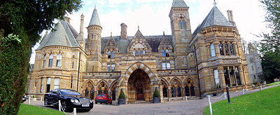
DANGER MAN: Whatever
Happened To George Foster?
(Don Chaffey: November 1964)
The family home of Lady Ammanford and her sister (photograph
taken
during production of 'THE HAUNTING').
(Identified by Richard Lee-Van den Daele, January 2008)
DANGER MAN: Have
a Glass of Wine (Peter
Maxwell: 1964)
John Drake makes a nocturnal call to the home of Lamaze
(photograph taken during production of 'THE HAUNTING').
Film:
THE HAUNTING (1963)
THE WATCHER IN THE WOODS
(1980)
JASON KING: A
Thin Band of Air (Cyril
Frankel: 1971)
Jason is posing with a copy of his latest book by the Merry-Go-Round at
a fun fair
(Charles Manning's Amusement Park) as he is
photographed by Lee Bailey.
Assassin, John Hewlett, makes his way to the top of the big dipper to
find his vantage point. He shoots the book out of Jason's hand. Jason
and Lee run for cover.
(location identified by David Auger February 2001)
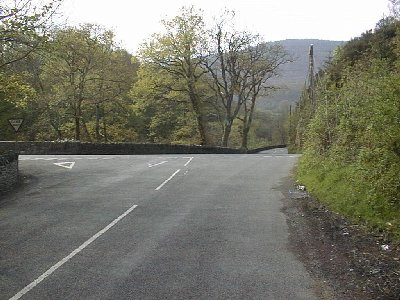
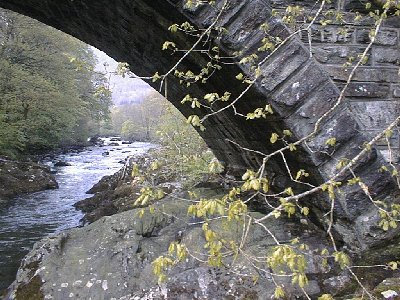
DANGER MAN: The
Professionals (Michael
Truman: 1964)
John Drake (Patrick McGoohan) stops at a café so
that Pearson (Jerry
Stovin) can get a drink. They soon attract the attention of
the local
authorities and their car is sabotaged. They run into the woods and
when more police arrive with tracker dogs they double back and steal a
police car to make their escape.
(Identified by Pat)
THE NEW AVENGERS:
Dead Men are Dangerous
(Sidney Hayers: Spring 1977)
Steed (Patrick Macnee) and Gambit (Gareth
Hunt) attempt to enter the
tower where Purdey is being held.
(Identified by Gareth Hughes, April 2003)
GIDEON’S WAY: The
Lady-Killer (Leslie
Norman:
September 1964)
Robert Carne (Ray Barrett) and Marion Grove (Rosemary
Leach) arrive at
the country cottage they have rented (Pheasant Cottage, The
Causeway).Carne goes for a drink and an alibi at the local
pub (The
Star, The Causeway). He notices the police station (Brick
Cottage, The
Causeway) and decides to use the local sergeant to confirm
his story.
It is not long before Bert Macey (John Tate)
arrives at the cottage to
make trouble for Carne.
(Identified by Greg Mishevski, aka SainT on the Britmovie Forum,
February 2011)
THE PRISONER: The
Chimes of Big Ben: (Don
Chaffey: December, 1966)
Nadia enters the water from the beach and begins to swim out to sea.
Nadia is captured by Rover, after it splits into three
entities
and is brought back to the beach.
After dark, Number Six meets Nadia on the beach
(East Cliff Sands aka Sunny Sands Beach) and they
construct
their home-made dinghy. Once complete, they push it out to
sea.
Nadia points out the cave (The Warren near the Battle of
Britain
memorial) towards which they are heading in their dinghy just
before
Rover attacks. Number 6 and Nadia jump from the boat and start to swim
towards the shore (Copt Point, just below Wear Bay Road).
(Identified from clues from cameraman Robert Monks
quoted in
the The
Unmutual web site, June 2007 - Thanks to Rick Davey, Gareth
Hughes and Tina Jerke, March 2021 for filling the detail of the shoot)
THE PRISONER: Dance
of the Dead: (Don
Chaffey: December, 1966)
Exhausted, after his encounter with Rover, Number Six walks up the
beach to some rocks (beginning of harbour wall on East
Cliff Sands aka Sunny Sands Beach) and sits down.
THE FOUR JUST MEN:
A few Episodes: (???:
???, 1959)
This is a placeholder
Films:
DEVIL DOLL
(1964)
THE COME BACK
(1978)
THE ADVENTURES OF ROBIN HOOD: The Path of True Love (Terrence Fisher: 1957)
Frensham Ponds, Surrey
Photo: Ivor Williams
DANGER MAN: Such
Men Are Dangerous (Don
Chaffey: 1964)
Drake steals a Land Rover and is pursued by his former comrades.
THE BARON: Red
Horse, Red Rider (John
Moxey: July/August 1965)
The Baron travels to Khakania and drives to the house of Olmira with
his granddaughter, Savannah. They are followed all the way by Salar and
Shamir in a Jeep. Later, dressed as farmers The Baron and Savannah
drive across Khakania to the border, with the statuette, followed by
Salar and Shamir in the Jeep (Frensham Common).
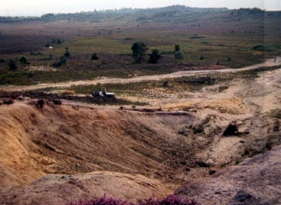
THE BARON: Night
of the Hunter (Roy
Baker:
July 1966)
Madame Nicharos and Nicholas dive to the port in a jeep.
(Identified by Paul Stroud, June 2015)
JOURNEY TO THE UNKNOWN:
Somewhere In A Crowd
(Alan Gibson: 1968)
William Searle (David Hedison) takes Marielle (Jane
Asher) away for the
day in the country, he stops at a village (Frensham)
to phone his wife
with a suitable excuse. After deciding to give his marriage a second
chance, William Searle takes Ann Bell (Ruth Searle)
away for a holiday
(they stay at Frensham Pond Hotel, Pond Lane, Frensham).
As William
watches as Ann take a swim (in Frensham Pond) he
suddenly realises
Marielle is watching him. Soon William is horrified to see the rest of
the mysterious watchers (George McGrath, Frank Cousins,
Kaplan Kaye,
Ann King, Elizabeth Robillard) appear.
(Identified by Alan Field, August 2007)
Films:
THE HOUND OF THE BASKERVILLES
(1959)
THE PLAGUE OF THE ZOMBIES
(1966)
THE REPTILE (1966)
THE SAINT: The
Set-Up (Roy
Baker: October
1964)
Tex Goldman (Henry Gilbert) arrives at the site of
the 25,000 pound
Mail van robbery, Portsmouth Road railway crossing. The robbery is to
coincide with the 9:25 train. Clem Enright posing as a police
motorcycle officer intercepts the Mail Van.
(Identified by Alan Field, November 2008)

THE AVENGERS: The
Grave-Diggers(Quentin
Lawrence: March
1965)
An early warning radar station suffers from interference from an
unknown source (image flipped, the 'golf balls' were
removed in 1989 and replaced by 'pyramids').
(Missing entry spotted by Mike Richardson)
THE SAINT: The
Rough Diamonds (Peter
Yates: 1963)
Simon Templar has arrived at Gatwick Airport with Alan Uttreshaw who is
carrying a consignment of industrial diamonds into the country.
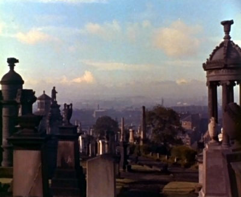
THE BARON: Diplomatic
Immunity (Leslie
Norman: August 1965)
Templeton-Greene sends John Mannering to meet his contact in Pamaranea
(view from the University Tower looking N.N.W.).
MAN IN A SUITCASE:
Find
the Lady (Robert Tronson: October 1966)
Mori arranges to meet Julio in a Roman cemetery (Glasgow
Necropolis,
Castle Street). McGill is waiting, but his plan to catch
Julio falls to
pieces as he escapes into the catacombs.
THE CHAMPIONS: The
Silent Enemy (Robert Asher: April 1967)
NATO Submarine base (River Clyde)
(Spotted by Michael Richardson, March 2022)
RANDALL AND HOPKIRK
[DECEASED]: A
Sentimental Journey (Leslie Norman: July 1968)
Jeff arrives at a Glasgow tenement to find the courier (Maclean
Street
between Cragiehall Street and Rutland Place, demolished).Later
Randall
leaves Glasgow with Dandy Garrison on the London Express from Glasgow
Central Station (establishing shot Glasgow Central Station,
Gordon
Street).
(Identified by Paul Stroud, May 2010)
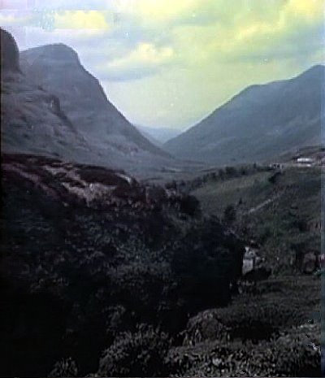
THE SAINT: The
Man Who Could not Die
(Roger Moore, May 1965)
The Saint hires a local guide to take him to Dragon’s Cave to search
for Miles Hamlin and Nigel Perry (World Backgrounds 9476).
THE PRISONER: Do
Not Forsake Me Oh My Darling
(Pat Jackson: August 1967)
A slide of Bideannam Bian (shown reversed), is part
of a set of “36
dreary and badly shot colour shots” given to Number 6 by Seltzman.
THE NEW AVENGERS:
Obsession (Ernest
Day:
Spring 1977)
A group of jets fly through the Glen before dropping their bombs.
MAN IN A SUITCASE:
The Boston Square (Don
Chaffey: February 1967)
Sir Eric Coulsdon and McGill play a game of Golf as they discuss terms
for McGill to track down Dalby.
(Identified by Michael Richardson, 18th December 2008)
THE SAINT: The
People Importers (Ray
Austin: 1968)
After solving the case Simon Templar returns to the Sussex coast to
fish with Laura.
(Identified by Leyther8008, on the Britmovie Forum, December
2008)
MAN IN A SUITCASE:
Property Of A Gentleman
(Peter Duffell: Summer 1967)
Establishing shot of French port as Gilsen waits at a cafe before
heading across the channel.
(Identified by Geoff Dodd, May 2009)
JOURNEY TO THE UNKNOWN:
Jane Brown's Body (Alan
Gibson: 1968)
After visiting his college Paul Amory (David Buck)
takes Jane Brown
(Stephanie Powers) for a drink at a local pub (The
Red Lion, 33 High
Street). Whilst Paul is fetching Jane a coat she is startled
by the
sound of a passing train and wanders off looking for Paul.
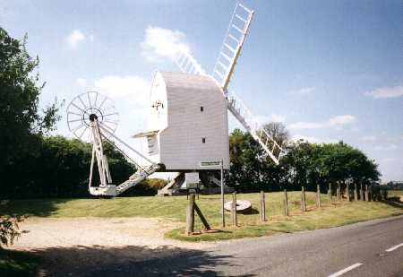
THE BARON: Countdown
(Robert
Asher:
October 1966)
The Baron, in his Jensen, chases Arkin Morley's Rover and it crashes by
a windmill. Arkin enters the mill and Mannering follows.
MAN IN A SUITCASE:
Web with Four Spiders
(Robert Tronson: January 1967)
Croft leaves McGill in the limousine with his chauffeur, Frederick (on
Oldfield Lane). Later, with Frederick in the back of the
limousine,
McGill leaves his hotel and drives off for London followed by
intelligence agents (from the car park on to Ruislip Road).
(Spotted by Paul Stroud, July 2010)
THE AVENGERS: The
Town Of No Return (Peter
Graham Scott: November 1964)
Saul (Robert Brown) is mending nets on the beach
near Little Bazeley by
the Sea (just east of Gun Hill) when a mysterious
figure emerges from
the sea wearing a waterproof bag. (Alan McNaughton).
The man asks for
directions to Little Bazeley.
(Identified by Jon Webb, December 2002)
DEPARTMENT S: Last
Train to Redbridge (John
Gilling: 1968)
Jason and Sulivan interview London Underground employees about the
murders at a Tube terminal.
(Identified by Alan Field, September 2008)
RETURN OF THE SAINT:
Collision Course Part One: The Brave
Goose (Cyril Frankel: July 1977)
Vic (Prentiss Hancock) and Simon Templar (Ian
Ogilvy) are in Cowes
preparing for the annual power boat race. Also there for the race are
Oscar West (Edward Brayshaw) and his wife Annabel
West (Gayle
Hunnicutt). After the collision of Oscar’s boat Simon and Vic
take
their boat to the Needles to investigate. After the inquest, Simon
Templar returns to ask as salesman (David English)
about who bought the
dive tanks he has found (powerboat sequences for the
episode
filmed in The Solent off Hamble Point)
THE BARON: The
Maze (Jeremy
Summers: June
1966)
Walter Farrow stalks Mannering and Cordelia as they investigate the
maze in the grounds of Crestview House.
DEPARTMENT S: The
Shift That Never Was (John
Gilling: Autumn 1968)
Establishing shots of Northover Atomic Power Station.
INSPECTOR MORSE:
Cherubim & Seraphim
(Danny Boyle: 1991)
Whilst Morse (John Thaw) waits for Gwen Morse (Edwina
Day) at the
nursing home, Doctor Collier (Jason Isaacs)
arrives. Gwen is brought
out by her daughter, Joyce (Sorcha Cusack), but she
refuses to go with
Morse despite a nurse's (Celia Blaker) intervention.
THE PERSUADERS!:
A
Death In the Family (Sidney Hayers: 1971)
Uncle Angus' Scottish castle.
THE NEW AVENGERS:
The Lion And The Unicorn
(Ray Austin: 1977)
Steed and Purdey, in Purdey's TR7, are chased through the ford by The
Unicorn's men.
RANDALL AND HOPKIRK
[DECEASED]: Most
Episodes
The offices of Randall and Hopkirk, private investigators
(Adams furniture store situated on corner of Kymberly Road and
Springfield Road area now redeveloped as part of St. Georges shopping
centre).
(Pinpointed by Andy Hulse)
RANDALL AND HOPKIRK
[DECEASED]: The
Trouble with Women (Cyril Frankel: October 1968)
Jeff and Marty in the Vauxhall follow Paul Lang, in his limousine
(short sequences of drivers point of view long Station Road
from 345
Station Road and 292 Station Road). Also, Jeff (Harry
Fielder) follows
Paul Lang if his Vauxhall with Marty (Dougie Lockyer)
giving him advice
on the way (panning shot to 61 Lower Road, Roxeth).
(Identified by Nick Williams: 1998)
UFO: Confetti
Check A-O.K. (David
Lane: November 1969)
An office block being built opposite the Harlington Straker film
studios to cover the construction of S.H.A.D.O.'s underground
headquarters (Northwick Park Hospital, Watford Road).
(Identified by Andrew Chilcott, March 2008)
JOURNEY TO THE UNKNOWN:
The Last Visitor (Don
Chaffey: 1968)
Hastings, Kent - Barbara King (Patty Duke) arrives
at the Beach Hotel
in Southcliff-on-Sea (2 Pelham Crescent) and books
in, the last visitor
of the season. Barbara takes the opportunity to visit the pier. Later
Mrs. Walker takes Barbara shopping to Butler’s Emporium (70
George
Street).Barbara returns to the shop later to find out more
about Mr.
Walker and then walks back to the seafront.
GIDEON'S WAY: Fall
High, Fall Hard (Leslie
Norman, November 1964)
A police car is sent to lay in wait for, and
intercept Tony
Erickson's car (turning off Central Avenue onto
Uxbridge Road)
H. G. WELLS' INVISIBLE MAN:
The Locked Room
(Pennington Richards: 1958)
The Invisible Man drives the hearse with Tania's coffin aboard down the
slip road from the A4, and pulls up in front of the control tower to be
met by Phillips and a security guard. They allow the hearse onto the
apron just as Dushkin's limousine arrives. The hearse pulls up in front
of Tania's aircraft.
(Spotted by Sam Denham, September 2000)
H. G. WELLS' INVISIBLE MAN:
The Decoy (Quentin
Lawrence: 1959)
Establishing shot of the airport.
(Spotted by Sam Denham, September 2000)
H. G. WELLS' INVISIBLE MAN:
Man In Disguise
(Quentin Lawrence and Peter Maxwell:1959)
Nick's gang drive off past the control tower.
(Spotted by Sam Denham, September 2000)
THE SENTIMENTAL AGENT:
All That Jazz (Charles
Friend, 1962)
The Arthur Rogers Quintet (Anneke Wills, Riggs O’Hara, Jeremy
Bullock,
James Luck and Hugh Fletcher) arrive at the airport where
they are met
by Bill Randall (John Turner) and have to go
through immigration and
customs. Later Carlos Varell (Carlos Thompson)
arrives in his Aston
Martin to meet with the group.
(Spotted by Jaz Wiseman, February 2011)
THE AVENGERS: Sell
Out (Don Leaver:
June 1962)
Steed and Doctor King drive to Heathrow Airport in an AC sports car
(they enter Tunnel Road East).
(Identified by Michael Richardson, April 2013)
THE SAINT: Starring
The Saint (James
Hill:
1963)
(Spotted by Sam Denham, September 2000)
THE SAINT: Luella
(Roy Baker:
1963)
Establishing shots of the airport, including a car pulling up.
(Spotted by Sam Denham, September 2000)
THE SAINT: The
Lawless Lady (Jeremy
Summers: 1963)
The Countess Marova's Rolls-Royce turns into the airport from the Bath
Road.
(Spotted by Sam Denham, September 2000)
DANGER MAN: It's
Up To The Lady (Michael
Truman: 1964)
Glover's car enters London Airport as he flees the country to Albania.
(Spotted by Sam Denham)
DANGER MAN: Whatever
Happened To George Foster?
(Don Chaffey: November 1964)
Certhia Cooper is driven away in a Rolls-Royce followed by Drake's
Mini.
(Spotted by Sam Denham)
DANGER MAN: A
Room in the Basement (Don
Chaffey: 1964)
The Turbulls arrive in Geneva by plane. Later Drake arrives in Geneva.
DANGER MAN: Colony
Three (Don
Chaffey: July
1964)
The Comet carrying Drake arrives in Easter Europe.
DANGER MAN: The
Mirror's New (Michael
Truman: 1964)
Bierce’s Lufthansa flight from Paris descends into Cologne/Bonn Airport.
GIDEON’S WAY: The
Great Plane Robbery (Leslie
Norman: March-April 1965)
Stock footage of Russian Plane landing.
DANGER MAN: The
Affair at Castelevara
(Quentin Lawrence: 1964)
Ramos Torres flies into his homeland from France. Later John Drake
arrives at the same airport to help rescue Torres.
DANGER MAN: Have
A Glass Of Wine (Peter
Maxwell: 1964)
John Drake follows Martin to Paris.
THE SAINT: The
Crime of the Century (John
Gilling: January 1965)
Templar and Teal are waiting for the arrival of Carl Munster. At the
same time David Tregrath arrives with Betty Tregrath to catch TEA 7 to
Zurich
THE BARON: Diplomatic
Immunity (Leslie
Norman: August 1965)
David Marlowe is waiting at London Airport when John Mannering arrives
in the country. David drives Mannering from the airport in the Jensen.
THE BARON: The
Edge of Fear (Quentin
Lawrence, May 1966)
An Air France plane flies Kent Jordan into the country posing as a
typhoid victim. As the ambulance leaves the airport it is carrying
something far more valuable than the patient.
THE SAINT: The
Paper Chase (Leslie
Norman:
August 1966)
After stealing the file on "East Zone Operatives" Eric Redman catches a
plane to Berlin.
THE BARON: Farewell
to Yesterday (Leslie
Norman: September 1965)
After arriving on a flight from Rome airline steward, Robert Rawson,
sets off for home in his Mini.
MAN IN A SUITCASE:
The Girl Who Never Was
(Robert Tronson: November 1966)
McGill flies back in to London from the continent
MAN IN A SUITCASE:
Day of Execution
(Charles Crichton: December 1966/January 1967)
McGill is at Heathrow Airport to see Willard off to Germany. After
Willard leaves for his flight an urgent call for "Mr. Mariocki" is
posted on the public address system, McGill goes to investigate.
MAN IN A SUITCASE:
Web with Four Spiders
(Robert Tronson: January 1967)
Dr James Norbert (Ray McAnally) arrives at London
Airport from
Manchester and is met by various officials and his daughter Martha
(Jacqueline Ellis).
MAN IN A SUITCASE:
The Boston Square (Don
Chaffey: February 1967)
Instead of attending the Chairman's meeting Dalby leaves the country
for Greece. After his assignment McGill returns to London alone.
THE CHAMPIONS: The
Gun Runners (Robert
Asher:
February 1967)
Heathrow Airport - Craig's leaves his plane after arriving at Rangoon
Airport.
(Identified with help from Pprune.org and Goldox, March 2022)
THE SAINT: The
Master Plan (Leslie
Norman:
1967)
Mr. Ching arrives in London for a meeting with Cord Thrandel.
THE CHAMPIONS: The
Search (Leslie
Norglasman:
April 1967)
Establishing shot of Terminal 3 (footage originally shot for
THE BARON:
Diplomatic
Immunity).
THE CHAMPIONS:
The Mission (Robert
Asher: May 1967)
Posing as a fugitive gangster and his moll, Craig and Sharon arrive at
London Airport where the press are waiting for them.
THE CHAMPIONS:
The Experiment (Cyril
Frankel:
June 1967)
Tremayne sends some police detectives to watch Sharron Macready
(Alexandra Bastedo) when she arrives at London
Airport (Heathrow
Airport, Terminal 2, Clifton Road). She flags down a taxi,
but is
intercepted by another which has been waiting for her. As the taxi
drives off the two policemen follow in their car (footage
originally
shot for
THE BARON:
Diplomatic Immunity is used to
establish
the Heathrow location).
(Spotted by Paul Stroud, April 2009)
THE CHAMPIONS:
The Interrogation
(Cyril
Frankel: Autumn 1967)
Heathrow Airport - Craig's leaves his plane after arriving at Hong Kong
Airport.
(Identified with help from Pprune.org and Goldox, March 2022)
THE SAINT:
The Double Take (Leslie
Norman:
Spring 1968)
Simon Templar visits Heathrow Airport to drop off a package.
THE SECRET SERVICE:
A Case for the Bishop (Alan
Perry: Autumn 1968)
Father Unwin (Stanley Unwin) arrives in his Model T
Ford, Gabriel, at
the airport to drop off Matthew so he can sabotage the plane.
THE SECRET SERVICE:
May-Day, May Day! (Alan
Perry: Autumn 1968)
Sinister plans are made for the king’s light to New York.
STRANGE REPORT:
7931 Sniper: 'When is your cousin
not?' (Daniel Petrie:
September/October 1968)
Strange’s aircraft flies into Lublin Airport, Lubianka.
(Identified by Ian Press, October 2005)
DEPARTMENT S:
Six Days (Cyril
Frankel: 1968)
The missing plane arrives. Stuart Sulivan (Joel Fabiani)
chases the
Stevens (Charles Houston), the navigator, into the
subway service
tunnel. Stuart Sulivan (Joel Fabiani) takes Captain
Carter (Bernard
Horsefall) and Borowwitsh (Peter Bowles)
for a flight in a jet liner.
When they return Borowwitsh is shot by a sniper. Durres (Al
Mancini) is
listening from outside Terminal 3.
DEPARTMENT S:
One of Our Aircraft is Empty
(Paul Dickson: 1968)
Skytripper 190 lands at the airport with no flight crew or passengers
aboard. Jason and Sullivan go to the airport to investigate.
DEPARTMENT S:
The Trojan Tanker (Ray
Austin:
Summer 1968)
Jason King and Stuart Sullivan watch from Jason’s Bentley as the tanker
arrives at the Pan Am hanger.
DEPARTMENT S:
The Ghost of Mary Burnham
(Cyril Frankel : 1968)
Stuart Sullivan meets Sir Curtis Seretse at London Airport and they
leave for London in Sir Curtis’ Rolls Royce
DEPARTMENT S:
The Bones of Byrom Blain
(Paul
Dickson: 1968)
Stewart Sullivan arrives in London after foiling the attempted
kidnapping of CIA agent Wilber Smith.
STRANGE REPORT:
Report No.2475 - REVENGE:
'When a man hates'
(Charles Crichton: November 1968)
Churchill attempts to catch a flight out of England to Milan before
Hanson can take his revenge.
DEPARTMENT S:
The Man From 'X' (Gil
Taylor:
Early 1969)
Annabelle and Jason wait at Heathrow Airport for a new 'Key' to arrive.
Sullivan’s plane arrives from New York.
DEPARTMENT S: A
Ticket to Nowhere (Cyril
Frankel: Early 1969)
Heathrow Airort, London, England, December 6th (shots of
control tower
and Terminal 3, footage from THE BARON:
Diplomatic Immunity). Later, Jason King meets
with Susan Blain (Terminal 2).
(Spotted by Micheal
Richardson, November 2023)
RANDALL AND HOPKIRK
[DECEASED]: The
Ghost
Who Saved the Bank at Monte Carlo (Jeremy
Summers: June
1969)
The aeroplane carrying Jeff, Jean and Marty's Aunt Clara to Monte Carlo
takes off.
UFO: Confetti
Check A-O.K. (David
Lane: November 1969)
The newly married Strakers prepare to go on honeymoon, Instead, Straker
departs to New York on S.H.A.D.O. business..
THE PERSUADERS!:
That's
Me Over There (Leslie Norman: Nov/Dec 1970)
The Judge (Laurence Naismith) exits the terminal
building and is met by
Danny in his red Ferrari.
(Identified by Stephen Carter, October 2002)
THE PERSUADERS!:
Element
of Risk (Gerald Mayer: February 1971)
As he exits the terminal building, Danny (Tony Curtis)
is mistaken for
Lomax by Charlie (June Ritchie). Brett
arrives in BS1 in time
to
see Danny leaving with Charlie. In an office overlooking the
airfield, two detectives question the real Lomax (Shane
Rimmer).
(Identified by Stephen Carter, October 2002)
THE PROTECTORS:
…With a Little Help from My Friends
(Jeremy Summers: Winter 1971)
Caroline and Paul arrive in London and are welcomed by Harry Rule.
THE ADVENTURER:
Double Exposure (Cyril
Frankel: 1972)
Establishing shot of Terminal 1.
(Spotted by Jaz Wiseman, November 2001)
THE PROTECTORS:
Burning Bush (Don
Leaver: Winter 1972)
Adam Ferris (Anthony Steel) leaves Terminal 3, gets
into a Rolls Royce
and is driven off to his meeting with Harry Rule.
(Spotted by Paul Stroud, March 2009)
THE NEW AVENGERS:
The Midas Touch (Robert
Fuest: Spring 1976)
Purdey (Joanna Lumley) and Steed (Patrick
Macnee) wait for the arrival
of "The Fat Man" at Terminal 3. Steed spots Hong Kong Harry (Ronald
Lacey) trying to sneak out. As they approach Harry is shot by
an
assassin disguised as flight crew. Purdey gives chase as the assassin
leaves the building and gets in to his car. Gambit (Gareth
Hunt) is
waiting in his car so Purdey gets in and they chase after the assassin.
RETURN OF THE SAINT:
The Poppy Chain
(Charles Crighton: ???)
Simon Templar (Ian Ogilvy) changes identity with
Frank Rickman (Gary
Waldhorn) with the help of a customs officer.
THE PROTECTORS:
Wheels (David
Tomblin:
1973)
Sneider (George Pravda) arrives at London airport (Terminal
1) and gets
into his chauffer driven Bentley.
(Spotted by Paul Stroud, April 2009)
RETURN OF THE SAINT:
The Arrangement (Peter
Medek: ???)
Simon Templar
(Ian Ogilvy) escorts Sheila Northcott (Sarah
Douglas) through the
airport where they witness Lady Greer Stevens (Carolyn
Seymour) trip
Hansen (David Healy) down an escalator. When they
return to the
airport, Simon is approached by an American passenger (Sandra
Dickinson).
RETURN OF THE SAINT:
One Black September
(Leslie Norman: 1977)
Simon Templar (Ian Ogilvy) is picked up by a pair
of Israeli agents.
Much later Captain Leila Sabin (Prunella Gee) and
Simon escort Abdul
Akim (Garrick Hagon) to his flight to Guyana.
Before he leaves Abdul
says his farewell to Yasmina (June Bolton). Simon
spots Rahman
(NadimSawaiha) at the airport but says nothing.
(Spotted by Sam Denham)
RETURN OF THE SAINT:
The Obono Affair (Peter
Sasdy: ???)
Simon Templar (Ian Ogilvy) sees Colonel Dyson (Jack
Hedley) about to
board a fight. But when he returns to his car he sees Dyson returning
to his. He follows Dyson from the airport to to a nearby hotel (Holiday
Inn Heathrow Hotel, Sipson Road, West Drayton).
(Spotted by Sam Denham)
RETURN OF THE SAINT:
Yesterday's Hero (Roy
Ward Baker: 1978)
Following an establishing shot of the Airport, Roy Gates (Ian
Hendry)
is stopped by two policemen as he arrives. Dizzy (Tony Vogel)
follows
him from the arrivals area.
(Spotted by Sam Denham)
RETURN OF THE SAINT:
Assault Force (Peter
Sasdy: 1978)
Simon Templar (lan Ogilvy) boards the airport bus
at Terminal Three
behind Jeanette (Kate O'Mara) and when it gets to a
perimeter car park,
saves her from assassination.
(Spotted by Sam Denham)
INSPECTOR MORSE:
The Sins of the Fathers
(Peter Hammond: 1989)
Late one night Trevor Radford is attacked and killed at Radford and
Son's Brewery (Breakspears Brewery, New Street). He
is found the
following morning by the brewery staff. When Chief Inspector Morse
(John Thaw) and Lewis (Kevin Whately)
arrive in Morse's Jaguar to
investigate, the pathologist is waiting for them. Norman Weaks explains
the current financial condition of the firm to the detectives and
introduces them to Gale, the company secretary. They also talk to the
Head Brewer and Mr. Price. A few nights later Helen Radford (Kim
Thomson) goes to the Brewery looking for Stephen Radford (Paul
Shelley)
but finds him murdered. Later Cynthia goes to talk to Gale about her
son just as Charles Radford (Lionel Jeffries) and
Isobel (Isabel Dean)
arrive foe a board meeting.
SABER OF LONDON:
Come Out Fighting (Godfrey
Grayson: 1960)
Mark Saber (Donald Grey) races to the ringside to
get things straight
between Johnny and Clancey.
(Identified by Alan Field, June 2023)
THE CHAMPIONS:
Desert Journey (Paul
Dickson:
Spring 1968)
Sharron (Alexandra Bastedo) goes for a lengthy
underwater swim much to
the surprise of two pool attendants.
THE SAINT:
The Contract (Roger
Moore:
October 1964)
Jack Farnberg (Robert Hutton) forces Eileen
Ballinger (Elizabeth
Weaver) to an empty railway carriage where he interrogates
her about
“Richard Reason”. Later Simon Templar (Roger Moore)
and Dunstan (Dick
Haymes) follow Farnberg to the railway from London. They
drive through
a tunnel (Wymondley Road to the south of the goods yard).
They chase
Farnberg across the railway lines and a gunfight ensues.
(Identified by Alan Field, November 2008)
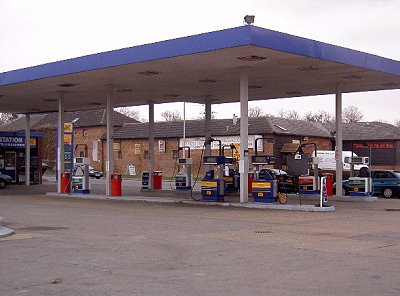
THE AVENGERS:
The £50,000 Breakfast
(Robert
Day: July 1967)
Steed (Patrick Macnee) and Mrs Peel (Diana
Rigg) visit a garage (A5
Garage, A5, redeveloped) to talk to a mechanic (Richard
Owens) about
Rhodes' car.
(Identified by Jaz Wiseman, March 2005, Confirmed by Mark
Buckledee)
THE PERSUADERS!:
That's Me Over There
(Leslie Norman: 1970)
After leaving Heathrow Airport, Danny Wilde and Judge Fulton drive
along in Danny's red Ferrari Dino on their way into central London to
meet Brett Sinclair.
(Spotted by Jaz Wiseman, August 2011)
THE SAINT:
The Convenient Monster
(Leslie
Norman: February 1966)
Simon Templar is in Scotland, a land of castles and cottages.
THE BARON:
The
Man Outside (Roy Baker: September 1966)
Establishing shot of Scotland (World Backgrounds 9464)
(Identified by M. Briscoe, July 2003)
MAN IN A SUITCASE:
The Boston Square (Don
Chaffey: February 1967)
McGill watches as Dalby and Packard return to Corfu from yet another
trip into the Adriatic Sea. They moor their boat (on the
jetty at The Parade, Cowes) and enter the village (The
motor
yacht is a Christina 38 provided by the London Power Boat Company).
(Tony Pendrey on the Britmovie Forum, May 2009)
RETURN OF THE SAINT:
Collision Course Part One: The Brave
Goose (British Movietone: September
1974)
Vic and Simon Templar are in Cowes preparing for the annual power boat
race (newsreel footage of the 1974 Embassy/Daily Express
International
Offshore Powerboat Race from Cowes to Torquay, British
Movietone: September 1974).
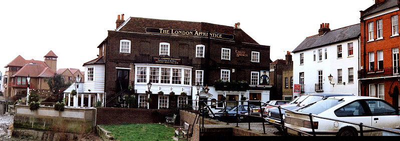
H.G.WELLS'
INVISIBLE MAN:
Decoy (Quentin
Lawrence: 1959)
Toni Trent (Betta St.John) arrives at The London
Apprentice (Church
Street) with The Invisible Man, who enters the building.
Andreas (Wolf
Morris) arrives and enters the pub. The Invisible Man returns
to Toni
to plan her sister's escape. After borrowing fourpence he make a call
from a phone box while Andreas forces Toni aboard his boat. The
Invisible Man follows in a dinghy.
(Source: Sam Denham)
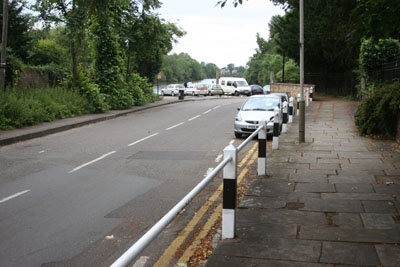
THE BARON:
The Edge of Fear
(Quentin Lawrence: May 1966)
Jordan drives Mannering towards the water works pump house where
Montford and Colbert are waiting for him to identify the stolen
artefact.
(Identified by Alan Field, June 2007)
Film:
THE CRIMINAL (1960)
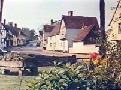
THE CHAMPIONS:
The Final Countdown
(John
Gilling: January 1968)
Sharron Macready and Richard Barrett go to a pub to interview the
landlord about the German plane he shot down in the last days of the
war.
(Identified by Gareth Hughes, April 2003)
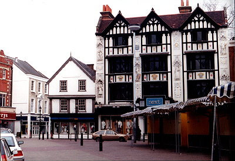
MAN IN A SUITCASE:
Day of Execution
(Charles Crichton: Dec 1966/Jan 1967)
McGill and Moira drive Willard to McGill’s flat and later McGill chases
a mysterious car around the streets.
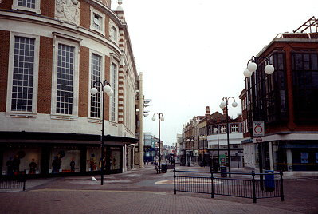
THE SAINT:
The Time to Die (Roy
Baker:
April 1968)
Simon Templar drives Mary Ellen Brent home in his Volvo (back
projection using Day of Execution footage from the railway station and
down along Clarence Street and Eden Street past "Bentalls", now
“Beales” department store).
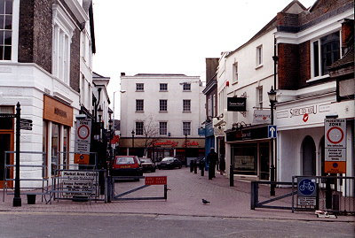
<>RANDALL AND HOPKIRK
[DECEASED]: All
Work
and No Pay (Jeremy Summers: Early 1969)
The Foster brothers’ drive to Jeanie’s flat (back projection
using Day
of Execution footage).
RANDALL AND HOPKIRK
[DECEASED]: Money
to
Burn (Ray Austin: January 1969)
After an evening with his lawyer, Elizabeth Saxon, Jeff drives her
home. He offers here a nightcap to round off the evening (back
projection using Day of Execution footage past Bentalls", now “Beales”
department store and Fife Road).<
RANDALL AND HOPKIRK
[DECEASED]: The
Man
From Nowhere (Robert Tronson: March 1969)
Sheldon manages to escape from Mannering and Hyde Watson and drives
away from the warehouse in their Bentley (back projection
using Day of
Execution footage of Fife Road).<
RANDALL AND HOPKIRK
[DECEASED]: Vendetta
for a Dead Man (Cyril Frankel: March 1969)
As the police Landover drives away the officers discuss the possible
reason for Eric Jansen's escape. Later Jeff is driving over to Jeanie's
flat in his Vauxhall when he is intercepted my Marty with new that Jean
has already left to see Emile (both feature back projection
using Day
of Execution footage).
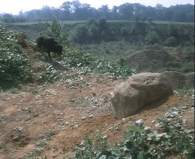
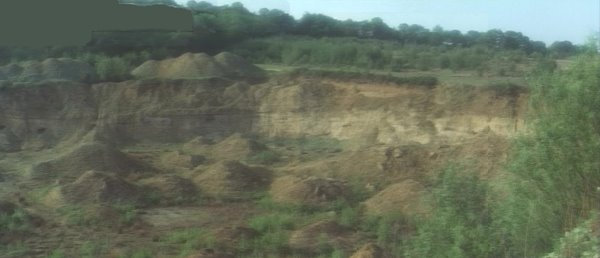
THE NEW AVENGERS:
The Midas Touch (Robert
Fuest: Spring 1976)
Freddy (John Carson) calls Steed (Patrick
Macnee) to a meeting at a
sand pit (Knowl Hill landfill, Star Lane, KnowlHill).
Steed and Purdey
(Joanna Lumley) arrive, but Freddy realises he is
infected and
deliberately drives his car over the cliff and it bursts into flames.
(Spotted by Chris Bentley, August 2007)
SPACE:1999:
The
Rules of Luton (Val Guest: 13-14th May 1976)
Commander Koenig (Martin Landau) and Maya (Catherine
Schell) explore an
alien planet (Knowl Hill landfill, Star Lane, Knowl Hill).
They pick a
flower and eat fruit and are condemned by the Judges of Luton to pay
for their crimes as cannibals and murderers. They are forced to do
battle against three aliens; Alien trainspotter (Godfrey
James), Alien
Strong (David Jackson) and Alien Invisible (Roy
Marsden).
Source: Space1999.net
website
THE NEW AVENGERS:
Cat Amongst the Pigeons
(John Hough: June 1976)
Merton (Andrew Bradford) attempts to get a message
to base from a
lonely rural spot (Knowl Hill landfill, Star Lane, Knowl Hill),
about
an attempted assassination of Rydercroft. His message is cut short when
he is attacked by an unknown assailant. Steed (Patrick Macnee),
Purdey
(Joanna Lumley) and Gambit (Gareth Hunt)
arrive to investigate.
(Spotted by Chris Bentley, August 2007)
THE AVENGERS:
Tunnel of Fear (Guy
Verney,
August 1961)
Establishing shots of holiday makers enjoying the beach, rides and
other amusements at Southend-on-Sea (stock footage including
Southern
Pier).
(Identified by Alan Hayes, November 2016)
THE PRISONER:
The Girl Who Was Death
David
Tomblin:
November 1967)
The secret agent arrives at the fairground to visit Barney's Boxing
Booth. Sonia
(Justine Lord) is later followed to the Water Chute.
In his search for
the girl the secret agent finds himself on the big dipper with an irate
photographer (Alexis Kanner) and his model. When
Sonia leaves in her
E-Type the secret agent follows in his Lotus Elan.
UFO: Court Martial
(Ron
Appleton:
October 1969)
Straker and Foster take a roller coaster ride in the film studio
courtesy of back projection.
Film:
SLAYGROUND (1984)
Television:
SPITTING IMAGE (1990)
THE NEW AVENGERS:
The Eagle's Nest
(Desmond Davis: April 1976)
John Steed and Purdey go to the highlands and talk to a local
fisherman. They watch as Monks from St. Dorca arrive to collect
supplies.
DANGER MAN: The
Hunting Party (Pat
Jackson)
John Drake takes a job as butler at the Jordan's French chateau
(establishing shot).
THE SAINT: The
Old Treasure Story (Roger
Moore, May/June 1965)
Simon Templar arrives in Cornwall to visit his good old friend, Bill
Williams.
Loch Laggan, Inverness-shire, Highland, Scotland (from Kinloch Laggan)

THE
AVENGERS: Castle De'Ath
(James Hill: August 1965)
Establishing shots of Scotland.
(Identified by Sietse Postma, August 2023)
H. G. WELLS' INVISIBLE MAN:
Bank Raid (Wolfgang
Suschitsky: 1958)
After the bank raid Brady is taken by Crowther (Willoughby
Goddard) and
Die Williams (Brian Rawlinson) to the boat where
Sally (Deborah
Watling) is being held by Joe, another of Crowther’s heavies.
(Identified by Andrew Chilcott, August 2013)
THE INVISIBLE MAN:
Pilot Episode (Wolfgang
Suschitsky: 1958)
After the bank raid Brady is taken by Crowther (Willoughby
Goddard) and
Die Williams (Brian Rawlinson) to the boat where
Sally (Deborah
Watling) is being held by Joe, another of Crowther’s heavies.
(Identified by Andrew Chilcott, August 2013)
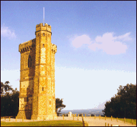
ROBIN HOOD: The Goldmaker's Return (Terry Bishop: 1957)
Lindisfarne Castle, NorthumberlandTHE ADVENTURES OF ROBIN HOOD: Highland Fling (Terry Bishop: 1957)
Liverpool, MerseysideTHE AVENGERS:
Mission to Montreal
(Don Leaver: May 1962)
The M.V. Calpurnia sets sail for Le Havre from Liverpool Docks.
DEPARTMENT S: Soup
of the Day (Leslie
Norman:
Spring 1969)
A crate of fish soup is stolen from a warehouse under cover of darkness.
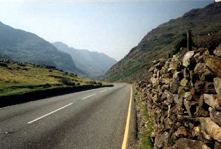
WILLIAM TELL: The
Hostages (Peter
Maxwell:
March 1958)
The Pass features as a Swiss valley.
THE SAINT: The
House on Dragon's Rock
(Roger Moore: February 1966)
The Saint drives his Volvo along the Welsh country roads.
THE SAINT: The
Convenient Monster (Leslie
Norman: February 1966)
The Saint drives Anne Clanraith home from the loch.
THE BARON: The
Man Outside (Roy Baker: September 1966)
As they drive through Scotland Mannering asks Cordelia if she would
recognise the car that tried to run her down the previous night.
THE PERSUADERS!:
Five Miles To Midnight
(Val Guest: 1970)
Brett and Danny steal on old truck from a French mountain side farm in
order to make their way to the border (back projection).
THE PERSUADERS!:
The Man in the Middle
(Leslie Norman: 1971)
Brett, Danny and Archie, whilst driving in Brett's Aston Martin,
discuss their plan en route to their rendezvous with Grillov.
THE PERSUADERS!:
A Death In the Family
(Sidney Hayers: 1971)
Brett, in his Aston Martin, drives Danny to visit Uncle Angus at has
Scottish castle.
THE PERSUADERS!:
Nuisance
Value (Leslie Norman: 1971)
Danny, in his Ferrari, chases after the car carrying Lisa and her two
kidnappers up into the Spanish mountains.
Film:
THE LONG ARM (1956)
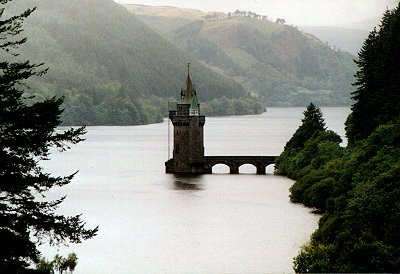
DANGER MAN: Time
to Kill (Ralph
Smart: 1959)
Lisa Orin (Sara Lawson) arrives at a border post (on
the dam) and
introduces herself to John Drake (Patrick McGoohan)
who is also held up
whilst the border guards search their cars. Drake's car is stopped at a
military check point and is told that he is entering a military zone.
Drake pulls of the road to hide from the patrols but he is seen by Lisa
who summons a passing patrolman. The patrolman is knocked out by Drake,
but not before he handcuffs Lisa and Drake together and throws the keys
into the lake.
DANGER MAN: The
Sisters (Seth
Holt: 1959)
A Slavosk security installation.
THE SAINT: The
Monster (Leslie
Norman:
February 1966)
Simon Templar drives his Volvo around the shore of Loch Ness.
Television:
THE PALLISERS (1974)
Photo: Stephen McKay
DANGER MAN: The
Professionals (Michael
Truman: 1964)
John Drake (Patrick McGoohan) arrives in
Checkslovakia by taxi, which
conveniently breaks down. Even more conveniently, the British
Ambassador just happens to be passing and gives him a lift into Prague.
(Identified by Janet Kaiser)

THE SAINT: The
Golden Journey (Robert
S.
Baker, October 1962)
After a long walk through the hot sun Simon stops at a lake to collect
water and Belinda joins him.

THE CHAMPIONS: The
Body Snatchers (Paul
Dickson: Late 1967)
Tremayne suspects that Richard Barrett is currently in North Wales. So
Sharron and Craig travel to Wales to find out what has happened to him.
photos: Matt Courtman of the DANGER
MAN Web Site
THE SAINT: The
Convenient Monster(Leslie
Norman:
February 1966)
Simon Templar drives Anne Canraith to her father's farm in his Volvo
(A5 near Llyn Ogwen).
(Spotted by Ian Garland, August 2007)
Photo from: North Wales Film
Commission Home Page
WILLIAM TELL: The
Hostages (Peter
Maxwell:
March 1958)
William Tell and Fritz (Roy Purcell) watch
Gessler's men as they
prepare to ferry weapons across the lake (LlynPadarn).
With the aid of
Frans the ferryman (James Booth) they overpower the
guards and make off
with the weapons in the ferry. Gessler sends troops to patrol the lake
and William Tell is almost captured.
WILLIAM TELL: Manhunt
(Peter
Maxwell: March
1958)
William visit friends living on an island in the lake. Later Prince
Maxamillian takes a boat across the lake.
WILLIAM TELL:
The Magic Powder (Peter
Maxwell: March 1958)
The view across the river to Italy from the Doctor's castle.
THE NEW AVENGERS:
Dirtier by the Dozen
(Sidney Hayers: October 1976)
Using the execution of George Harris as a distraction, Captain Tony
Noble (Michael Howarth) attempts to escape from the
camp. Colonel
Miller (John Castle) and his men give chase and
corner him in the
minefield. Later Mike Gambit (Gareth Hunt) and
Purdey (Joanna Lumley)
attempt to escape the same way. The pair split up and while Gambit
confronts Miller and Sergeant Bowden (Shaun Curry),
Purdey becomes
trapped in a minefield. Steed arrives in a helicopter in time to save
the day.
(Identified by Jon Webb, December 2002)
THE NEW AVENGERS:
Angels of Death (Ernest
Day: Summer 1977)
In order to overcome the effects of the conditioning Steed recalls his
army training (footage of Lonngmoore from 'Dirtier by the
Dozen').
(Spotted by Michael Richardson, December 2012)
MAN IN A SUITCASE:
All That Glitters
(Herbert Wise: August 1966)
McGill (Richard Bradford) is hired to go to the
village in order to
find a missing child.
THE SAINT: The
Invisible Millionaire
(Jeremy Summers: Autumn 1962)
Nora Prescott arrives at a boathouse to await Simon Templar’s
visitation. Unfortunately, she is followed by a mysterious figure with
evil intent (boathouse is still there opposite Sunbury Lock).
(Identified by Alan Field, September 2011)
THE NEW AVENGERS:
The Lion And The Unicorn
(Ray Austin: 1977)
Steed and Purdey, in Purdey's TR7, are chased by The Unicorn's men
along a road which is quite close to the cliffs (Marine Drive).


THE SAINT: The
Best Laid Schemes (John
Moxey: May 1967)
Simon Templar drives down to the sea in his Volvo to wax lyrical about
Neptune's Kingdom (Waveney Dock, Lowestoft). He arrives in time
to witness
Diana's discovery of a
body on the beach (The Promenade, Kessingland). Later Simon
takes his
Volvo to investigate Captain
Fleming's fishing business (Waveney Road, Waveney Dock).
(Identified by Bob Lawson of Bob Lawson's
Lowestoft Page)
THE SAINT: Island
of Chance (Leslie
Norman: January 1967)
Simon and Marla admire the island from the air (World
Backgrounds
309425).
STRANGE REPORT:
Report 1553: Racist: 'A most
dangerous proposal' (Peter Duffell: Autumn 1967)
Strange (Anthony Quayle) and Hamlyn (Kaz
Garas) drive to the airport in
Strange's taxi following Tom Brant (Clive Francis).
Film:
HYSTERIA (1965)
THAT RIVIERA TOUCH
(1965)
THE BARON: Diplomatic
Immunity (Leslie
Norman: August 1965)
Marlowe is driving John Mannering from the airport in the Jensen. They
discuss the stolen Faberge item and discover it has not been insured
(shot from the Sipson Road bridge, looking north).
(Identified by Alan Field, September 2008)
THE BARON: Farewell
to Yesterday (Leslie
Norman: September 1965)
Robert Rawson drives home from London Airport in his Mini.
(Identified by Alan Field, September 2008)
DEPARTMENT S: A
Ticket to Nowhere (Cyril
Frankel: Early 1969)
Jason and Miss Crane drive to Westerly Grange in his Bentley (M4
airport spur looking south from the Sipson Road bridge).
(Identified by Alan Field, October 2008)
THE SAINT: The
Imprudent Politician (John
Moxey: July 1964)
Janet Waites drives her Mini over the river (Maidenhead
Bridge) on her
way to a meeting with the blackmailers. Later Simon drives his Volvo by
the river (Ray Mead Road) looking for the Jolly 'D'.
DANGER MAN: Such
Men Are Dangerous (Don
Chaffey: 1964)
The train with John Drake and the ‘tweedy gentleman’ arrives at Little
Grimpton station (Maidenhead Station).
(Identified by Robert Chilton with help from Eamonn Connolly,
February
2008)
THE SECRET SERVICE:
Last Train to Buffler's Halt
(Alan Perry: Autumn 1968)
The clock tower of the Cramford Railway Station (Maidenhead
Railway
Station).
(Identified by Nick Williams, August 2003)
THE SECRET SERVICE:
A Hole In One (Brian
Heard: Autumn 1968)
Father Unwin (Stanley Unwin) arrives at the Leyland
Golf Club clubhouse
(Maidenhead Golf Club, Shoppenhangers Road) in his
Model T Ford,
Gabriel, for a meeting with General Brompton.

DANGER MAN: Dangerous
Secret (Stuart
Burge:
November 1965)
Barham Harbour.
GIDEON'S WAY: The
Tin God (Directed
by John
Gilling: ????)
John ‘Benny’ Benson and Freddy Tisdale escape from H.M. Prison
Strangeways, Manchester.
MAN IN A SUITCASE:
Web With Four Spiders
(Robert Tronson: January 1967)
Doctor Norbert is taken around the town by a pair of photographers.
Following Norbert's information McGill arrives at Piccadilly Station
and takes a cab through Piccadilly Gardens.
DANGER MAN: The
Conspirators (Michael
Truman: ???)
John Drake (Patrick McGoohan) arrives at the Norman
castle of Fran Jou
in a trap. Here he finds Judith Lindsay (Patricia Driscoll)
and her
children.
(Identified Jon Freeman, October 2002)
DANGER
MAN: The Brothers
(Cherles Frend: ????)
Drake drives off to see the Police Commissioner after capturing the two
brothers.
Photo: Wiebke Köppen
JOURNEY TO THE UNKNOWN:
Girl of My Dreams
(Peter
Sasdy: 1968)
Greg Richards
(Michael Callan) goes to Marlow in search of the
house where a women
gets killed in a boat explosion in Carrie Clark’s premonition (the
house, Thames Lawn, has been redeveloped).
(Identified by Wiebke Köppen, February 2008)
Film:
ON HER MAJESTY'S SECRET SERVICE
(1969)
Mayfield Railway Tunnel under the A267, North of Mayfield, nr. Crowborough, East Sussex. (filled in)
THE PRISONER: Fall
Out (Patrick
McGoohan:
December 1967)
The truck pulling the cage carrying Number 6 (Patrick
McGoohan), the
former Number 2 (Leo McKern) and Number 48 (Alexis
Kanner), driven by
the Butler crashes through the gates at the end of the tunnel leading
from the Village.
THE BUCCANEERS
The Fort at New Providence
DANGER MAN: Whatever
Happened to George Foster
(Don Chaffey March 1964)
John Drake visits Wales to investigate George Foster.
THE PRISONER: The
Girl Who Was Death (David
Tomblin: November 1967)
Establishing shots of the cricket match being played and runs being
scored.
THE BARON: So
Dark The Night (Robert
Tronson: June 1966)
Cordelia and Mannering are investigating the strange events in this
Cornish fishing village.
(Identified by Ian Press, October 2005)
THE NEW AVENGERS:
The Lion And The Unicorn
(Ray Austin: 1977)
Steed and Purdey, in Purdey's TR7, are chased round a corner and down a
steep hill towards a small village (Millbrook Haven).
THE NEW AVENGERS:
The Eagle's Nest
(Desmond Davis: April 1976)
As they talk to a local fisherman they watch as George Stannard’s body
arrives in a small boat. John Steed (Patrick Macnee)
arrives at St.
Dorca in a motor boat looking for accommodation. Purdey (Joanna
Lumley)
arrives on the island under water and leaves her wet suit on the shore.
THE AVENGERS: What
the Butler Saw (Bill
Bain:
December 1965)
In his naval disguise Steed (Patrick Macnee)
arrives in a motor launch
at the house of the Admiral. A wren stands by and sees him safely
ashore to the river bank.
DANGER MAN: The
Gallows Tree (Michael
Truman: 1959)
Castletown, a fishing village near Fort William where John Drake is
staying.
WILLIAM TELL: The
Assassins (Terry
Bishop:
March 1958)
Gessler’s troops escort the two assassins, posing as captured Swiss
nationalists, across country before being attacked by Tell and his men
(establishing shots of mountains, rocks by the anti-tank
blocks on road
to Yr Hafod Youth Hostel).
DANGER MAN: It's
up to the Lady (Peter
Maxwell: May 1964)
Nicos drives Paula and Charles Glover to the crossing point from Greece
to Albanian. Drake (Patrick McGoohan) is following
them in a stolen
delivery truck. Not far behind Drake are the Greek Police in a patrol
car on the trail of the stolen van. The party climb into the hills and
they are able to see Albanian guards on the border, (various
locations
near the Car Park including distinct chasm, waterfalls and rock climbs).
Photo: Matt Courtman of the DANGER
MAN Web Site
DANGER MAN: The
Professionals (Michael
Truman: 1964)
The authorities have manned the border post with armed police waiting
Desmond Pearson and John Drake (road to Yr Hafod Youth Hostel
some of
the anti-tank blocks have been removed).
Films:
SATAN NEVER SLEEPS
(1962)
DRAGONSLAYER (1981)
THE PERSUADERS!:
The Man in the Middle
(Leslie Norman: 1971)
Archie is whisked away after being traded (unnamed road
half-way
between Bryn Dinas and Nantmore Mountain Centre, Gelli Iago,
Nantgwynant).
(Identified by Sietse Postma, April 2022)
RETURN OF THE SAINT:
Collision Course Part One: The Brave
Goose (Robert S. Baker: September 1977)
After the collision of Oscar’s boat Simon (Ian Ogilvy)
and Vic
(Prentiss Hancock) take their boat to the Needles to
investigate.
Photo: Coral Gillespie
THE SECRET SERVICE:
School for Spies (Ken
Turner: Autumn 1968)
Mathew manages to hitch a ride to Pennybridge Seminary. Later Father
Unwin arrives at the seminary posing as Brother Jess.
MAN IN A SUITCASE:
Essay in Evil (Freddie
Francis: June 1967)
James Harris (Maurice Good) arrives at the Glendure
Hotel in his Volvo
and checks in under the name of "James Brown". Later McGill (Richard
Bradford) leaves the hotel in his Hillman, watched by Felix
De Burg
(Peter Vaughn), Harris and Tom Peters (John
Cairney). George Masters
(Donald Huston) drives up to the hotel and sends his
man, Crick (Peter
Brace) in to fetch the receptionist, Jean (Angela
Lovell). After
checking out, McGill is forced to accept the offer of a lift from
Lucinda Masters (Wendy Hall) in her MG.
Films:
ASYLUM (1972)

DANGER MAN: Parallel
Lines Sometimes Meet
(Don
Chaffey: February 1965)
Westport Harbour
Photo: Alan Field
STRANGE REPORT:
Report 4997 – Swindle: "Square root
of evil" (Brian Smedley-Aston: November 1968)
A tip-off leads Strange and company to Rye looking for the fishing boat
Albermarle. Strange talks to the Harbourmaster about the possible
location of the vessel.
(Identified by Alan Field, October 2007)
THE NEW AVENGERS:
To Catch A Rat (James
Hill: Summer 1976)
Cledge arrives at the church in his search for Gunner, but finds it to
be a ruin.
(Identified by David Auger, July 2003)
RANDALL AND HOPKIRK
[DECEASED]: The
Trouble With Women (Cyril Frankel: October 1968)
Using the dossier on Paul Lang given to them by his wife, Susan Lang,
Jeff and Marty travel to the racecourse to see what he gets up to on
his regular trips to the races.
THE CHAMPIONS: The
Night People (Robert
Asher:
June 1967)
Seen just before Craig and Richard arrive at the Cornish village
looking for Sharon.
(Identified by Ian S. Bolton, August 2007)
THE SECRET SERVICE:
A Case for the Bishop (Alan
Perry: Autumn 1968)
Father Unwin (Stanley Unwin) drives Gabriel through
the gates of
Oakington Airport(Western Avenue gate - now closed).
THE NEW AVENGERS:
House Of Cards (Ray
Austin: Spring 1976)
Steed (Patrick Macnee), Purdey (Joanna
Lumley) and Gambit (Gareth Hunt)
are waiting at the airport to hatch a plot to steal Professor Vasil
(Gordon Sterne) away from Perov (Peter
Jeffrey). Perov is escorting the
Professor back to Russia before he can defect. Perov tries to prevent
Vasil’s escape, but Steed’s driver, Roland (Frank Thornton),
is too
quick for him.
(Identified by Geoffrey Negus, July 2003)
THE NEW AVENGERS:
Sleeper (Graeme
Clifford: September 1976)
Steed (Patrick Macnee), Purdey (Joanna
Lumley) and Gambit (Gareth Hunt)
witness the demonstration of the S95 nerve gas. At the end of the
adventure they are returned from London, but fall asleep on arrival.
THE NEW AVENGERS:
Obsession (Ernest
Day:
Spring 1977)
Flt Lt Wolach (Tommy Boyle) shows Steed (Patrick
Macnee) and Purdey
(Joanna Lumley) around the RAF base so thay can
investigate the fire.
While on the base they pass Larry Doomer (Martin Shaw),
an old friend
of Purdey.
Films:
GOLDFINGER (1964)
OCTOPUSSY (1983)
Television:
THE PLANE MAKERS (1964)
THE SECRET SERVICE:
More Haste, Less Speed
(Ken Turner: Autumn 1968)
Father Unwin arrives in Gabriel at the gates of the home of Lord
Hazlwell
STRANGE REPORT:
Report 2493 - Kidnap "Whose pretty
girl are you?" (Daniel Petrie: Late 1967)
Jennifer Dean (Sally Geeson) is hiding with Toby (Ian
Ogilvy) and his
friend (Richard O'Sulivan) at Alison Manor as she
pretends to be
kidnapped. When things begin to sour Jennifer attempts to escape but
she is prevented by Toby who blocks her path with his car despite his
friend's attempt to stop him.
THE NEW AVENGERS:
The Midas Touch (Robert
Fuest: April 1976)
Turner (David Swift) and Vann (Ed
Devereaux) wait by their Landrover at
the fancy dress party organised to test Midas' powers. After he has
done his work they leave with Midas. Seconds later Gambit (Gareth
Hunt)
arrives in his car.
Films:
THE OLD DARK HOUSE
(1963)
RUN A CROOKED MILE
(1969)
THE HOUSE IN NIGHTMARE PARK
(1973)
THE ROCKY HORROR PICTURE SHOW
(1975)
Television:
THE COMIC STRIP PRESENTS:
Oxford (1990)
DANGER MAN: Fair
Exchange (Charles
Crichton: )
The mental hospital where Elisabeth Lanzig is being treated.
(Identified by Sam Denham, September 2002)

THE AVENGERS: A
Sense of History (Peter
Graham Scott: January 1966)
The University collge, 'St. Bodes'.
(Identified by Geoff Dodd, April 2021)
Film:
MANDY (1952)
THE SAINT: The
Fast Women (Leslie
Norman:
September 1966)
Karl Tordoff books into a hotel near Brands Hatch (The Bells
of
Ouzeley, Straight Road). After he is tracked down by The
Saint, Tordoff
escapes in his car closely followed by Templar in the Volvo.
(Identified by Mark Barry, July 2020)
THE SENTIMENTAL AGENT:
All That Jazz (Charles
Friend, 1962)
Establishing shot of outdoor Belmont Jazz Music festival venue.
(Spotted by Jaz Wiseman, February 2011)
THE SAINT: The
Lawless Lady (Jeremy
Summers: 1963)
The Countess Marova's Rolls-Royce drives towards Heathrow Airport (in
the vicinity of Osterley Station).
(Spotted by Sam Denham)
THE SAINT: The
Angel's Eye (Leslie
Norman:
March 1966)
Simon Templar (Roger Moore) arrives at Cranmore
House in his Volvo
where he has been invited to stay for the weekend.After attempting to
steal the Angel's Eye diamond Malone (T.P. McKenna)
and Corbett
(Frederick Abbott) are chased from the house by
Simon Templar and
Jeremy Cranmore (Donald Pickering).
THE PERSUADERS!:
Read
and Destroy (Roy Ward Baker: 1971)
Brett Sinclair (Roger Moore) arrives in his Aston
Martin DBS at his
cousin's country seat in Berkshire where he is met by Chivers (George
Merritt), the butler. Later Felix Meadows (Joss
Ackland) takes
advantage of the confusion in the house and leaves. Next morning Brett
and Danny Wilde (Tony Curtis) see Pfieffer (Elliott
Sullivan) and
Cavendish (Nigel Green) to their cars just as Heidi
(Kate O'Mara) and
Ingrid (MagdaKonopka) arrive.
THE PERSUADERS!:
The Morning After
(Leslie Norman: 1971)
Brett (Roger Moore) and his new wife, Kristen (Catherine
Schell) arrive
at Longmorton House in Brett's Aston Martin DBS for a meeting with
Judge Fulton (Laurence Naismith). That evening Lars
Seelman (Griffith
Jones) arrives with a police escort and is met by the Judge
and Brett.
As Brett and the Judge escort Seelman around the ground they are
watched by Jon (Tony Bonner) who attacks the butler
(Walter Horsburgh)
when he tries to give them a message from Danny. Danny (Tony
Curtis)
arrives in his Ferrari, but too late to stop Seelman being kidnapped.
Brett and Danny give chase in a Range Rover.
Film:
THE GRASS IS GREENER
(1960)
A STUDY IN TERROR
(1965)
Television:
Volkswagen advert (1992)
THE CHAMPIONS: The
Experiment (Cyril
Frankel:
June 1967)
Tremayne visits Dr. Glind in Oxford where he is lecturing (stock
footage of Nuffield College adjacent to New Road then the grounds of
Balliol College on the north side of Broad Street.)
(Spotted by Paul.Stroud, May 2008)
THE SECRET SERVICE:
A Case for the Bishop (Ken
Turner: Autumn 1968)
Matthew flies over Oxford whilst aboard the Dreisenberg airliner.
THE PROTECTORS:
Dragon Chase (Charles
Crichton: 1973)
Lockier drives into Oxford with Paul and the Contessa in pursuit (The
Plain). Lockier (Donald Houston) parks
his car (in Pembroke Square)
then enters Pembroke College to confront his son. He has been followed
all the way by Paul Buchet (Tony Anholt). Later
Paul and the Contessa
watch Devlin and his students leave the college and Devlin drives off
in a van. Paul and Caroline follow Devlin's van out of Oxford (The
Plain).
(Spotted by Paul Stroud, February 2010)
THE BARON: The
Legions of Ammak (John
Moxey: August 1965)
King Ibrahim's plane is waiting to take. The Baron arrives in his
Jensen and boards the plane.
(Identified by Barry Clay, July 2003)
THE ADVENTURES OF ROBIN HOOD:
The Miser (Bernard
Knowles: 1956)
A miser keeps all his money locked up in his castle (The
Gothic Tower)
while his tenants go without.
THE AVENGERS: Noon
Doomsday (Peter
Sykes:
July 1968)
Tara King (Linda Thorson) arrives by taxi in the
middle of a field and
makes her way across through and electric fence and across a minefield
to Department S, a farm used as a convalescent home for agents. She is
met by Cornwall (Lawrence James) who re-activates
the security systems.
Tara enters the farm house to see Steed (Patrick Macnee)
and is
followed in by Dr. Hyde (John Glyn-Jones). Roger
Lyall (Lyndon Brook)
takes Tara to use the radio transmitter in the barn, but they find it
smashed. Whilst Tara looks for Cornwall she is warned by Jules Perrier
(Peter Halliday) about going too close to the
minefield. After finding
the body of Hyde in a well Tara is attacked by Carson (David
Glover)
who is shot in the ensuing fight. At noon Kafta (Peter
Bromilov)
arrives by helicopter with Farrington (Ray Brookes)
and Grant
(T.P.McKenna) and the battle for Steed's life
begins, watched by Edward
Sunley (Anthony Ainley) from a first floor window.
THE SAINT: The
Well Meaning Mayor (Jeremy
Summers: 1963)
The Saint arrives in his Volvo at the seaside town of Seatondean. He
drives along the top of the cliff towards the town centre. Later we see
the beach looking east in an establishing shot.
THE AVENGERS: All
Done With Mirrors (Ray
Austin: May 1968)
Guthrie (Desmond Jordan) is running towards the
Carmadoc research
establishment. He hears a voice which lures him over the cliff. Later
Tara King (Linda Thorson) arrives at the cliff in a
Mini Moke to
investigate. Pandora makes contact from the lighthouse, but is then
forced to lure Tara into a trap. Kettridge (Peter Thomas)
rushes at
Tara on a motorbike and knocks her over the cliff edge. Watney
(DinsdaleLanden) and Major Sparshott (Peter
Copley) arrive to look for
Tara but they realise they are too late when they see her neck tie on
the rocks below.
Film:
CORRUPTION (1968)
Photo: Max Pemberton
photos: Richard Lee-Van den Daele
DANGER MAN: That's
Two of Us Sorry (Quentin
Lawrence: June 1964)
John Drake (Patrick McGoohan) arrives at the Loch
Broom Atomic Power
Station and is waved through the gates (BBC Radio station and
mast
Penmon). Off the north coast of Scotland is the island of
'Herta' where
live Magnus Sutherland and his daughter Sheila in 'the old Abbey'
(Priory House). 'Jock Lawson's (Duncan
Lamont) house is at Penmon
Point, one mile from the Priory, as is the lighthouse featured. John
Drake (Patrick McGoohan) arrives on the island by
the stone jetty on
the beach on the way up to the Priory. Later Drake confronts Donald
McKinnon (Brian Phelan) on his boat and the two men
fight. Drake is
later fished out of the water (form the deep bay, off shore
from the
stone jetty).
(thanks to Max Pemberton for extra details)
Photo: www.data-wales.co.uk
ROBIN HOOD: The
Deserted Castle
The deserted castle itself.
(Identified by Becky Vacara of the Later Medieval
Britain Discussion List)
Photo from: North Wales Film
Commission Home Page
WILLIAM TELL
(March 1958)
Altdorf Castle in many episodes.
WILLIAM TELL: The
Baroness (Peter
Maxwell:
March 1958)
William and the Baroness arrive at Ulbricht Castle on the same horse.
Later Hedda arrives and requests the help of two villagers to enter the
castle. After escaping from the castle, Hedda is pursued by Gessler and
his men.
THE SAINT: The
Invisible Millionaire
(Jeremy Summers: Autumn 1962)
Nora Prescott walks past a Thames lock as she makes her way from the
pub to a boathouse to meet Simon Templar
(Identified by Alan Field, September 2011)
Television:
THE SWEENEY: Bad
Apple (1976)
Photo: Stephen McKay
DANGER MAN: The
Professionals (Michael
Truman: 1964)
Desmond Pearson and Drake drive down the road leading to the border
post (road from Pen-y-Gwryd to Power Station, this road is in
very poor
condition).
(Identified by Pat)
DANGER MAN: It's
up to the Lady (Peter
Maxwell: May 1964)
After stealing a delivery truck Drake drives his stolen truck up
towards the Albania frontier (road from Power Station to
Pen-y-Gwryd,
road is now in a very poor state) on the trail of Nicos who
has driven
Paula and Charles Glover to the crossing point from Greece to Albanian.
THE PERSUADERS!:
Someone Like Me (Roy
Ward Baker: November 1970)
Brett (Roger Moore) visits the garage (H.R
.Owen Garage, A40, no longer
at this address and building has been demolished) where he
has his car
serviced.
Pinewood Sanatorium,
Wokingham (totally redeveloped as Hewlett Packard offices)
51°23'9.74"N, 0°48'4.10"W
THE NEW AVENGERS:
Faces
Purdey (Joanna Lumley) visits "Base 47" to find
Gambit.
(Identified by Dick Dove, 2004)
THE NEW AVENGERS:
Target (Ray
Austin:
July 1976)
The shooting range. Purdey (Joanna Lumley) drives
George Myers (Malcolm
Stoddard) to the shooting range. In order to save Purdey,
Steed and
Gambit race around a junction (Nine Mile Ride
51°23'3.29"N,
0°47'51.18"W) towards the shooting range at a break-neck pace.
(Identified by Dick Dove and Ray Mortimer 2004)
THE NEW AVENGERS:
Angels of Death (Ernest
Day: Summer 1977)
In order to overcome the effects of the conditioning Steed recalls
his training (footage of Pinewood Sanatorium
from
'Target').
(Spotted by Michael Richardson, December 2012)
Film:
1000 CONVICTS AND A WOMAN
(1973)
THE SEX VICTIMS
(1973)

Photo require
GIDEON'S WAY: Subway
to Revenge (Roy
Baker:
1965)
John Stewart parks his car in a cinema car park (ABC Cinema
Bridge
Street Pinner, next to the Hong Ying Restaurant).
DANGER MAN: Time
to Kill (Ralph
Smart: 1959)
John Drake (Patrick McGoohan) and Lisa Orin (Sarah
Lawson) arrive at
the hunting lodge from which Hans Vogeler intends to hunt bears.
Vogeler arrives by helicopter, but Lisa breaks Drake's gun before he is
able to shoot him. Vogeler and his men begin to hunt for Drake in the
woods, but he is later able to escape in the helicopter with Lisa.

Photo: Geoff Dodd
DEPARTMENT S: The
Treasure Of The Costa Del Sol
(John Gilling: September 1968)
After posing as a married couple to pay a call on Camilo in
Torremolinos, Annabelle and Stewart drive back to their hotel to listen
to the bug they have planted (Pinecliff Road).
(Identified by Alan Field, October 2008)
THE SAINT: The
Convenient Monster (Leslie
Norman: February 1966)
The Saint in his Volvo drives up to the house to speak to Noel Bastion.
DANGER MAN: Under
the Lake (Seth
Holt: 1959)
Drake follows Gunther von Klaus in his car.

DANGER MAN: It's
up to the Lady (Peter
Maxwell: May 1964)
Nicos drives Paula and Charles Glover to the crossing point from Greece
to Albanian. They travel along a narrorw road and across a bridge (Pont
Ty'n y Maes). Drake is following them in a stolen delivery
truck. Not
far behind Drake are the Greek Police in a patrol car on the trail of
the stolen van. Nicos’ car overheats on the way into the mountains so
the party have to set of on the crossing on foot (road to
Ceunant from
Pont Ty'n y Maesbridge, private property). Drake (Patrick
McGoohan) is
not far behind them and arrivesin his truck.
DANGER MAN: The
Professionals (Michael
Truman: 1964)
Desmond Pearson and John Drake approach the border post in a stolen
police car. The border guards open fire and Drake does a quick u-turn
(road to Ceunant from Pont Ty'n y Maesbridge, private property).
Photo: Stuart Lyon
THE SAINT: The
Miracle Tea Party (Roger
Moore: March 1964)
The Saint drives his Volvo across the causeway (Weymouth
road, A354)
and through Portland (Castletown) on his way to
drop Geraldine McLeod
off at the Naval base (past the Portland Roads Hotel).
(Identified by Stuart Lyon, August 2007)
THE SAINT: The
Old Treasure Story (Roger
Moore, May/June 1965)
The Saint visits his old friend, Captain Bill Williams, at his pub in
Cornwall (The Lugger Hotel).
Photo from: North Wales Film
Commission Home Page
DANGER MAN: View
From the Villa (Terry
Bishop: 1959)
Drake (Patrick McGoohan) drives into an Italian
village to find the
villa pictured in the painting he has aqacquired.
DANGER MAN: Under
the Lake (Seth
Holt: 1959)
Drake (Patrick McGoohan) stays at a lake side hotel
in Germany with Von
Klaus and his daughter, and is forced to escape via a bathroom window.
DANGER MAN: The
Honeymooners (Charles
Frend: 1959)
Guards patrol the Chinese jail where Ted Baker is being held.
DANGER MAN: Find
and Return (Seth
Holt:
1959)
Drake and Nikolides watch as guards patrol Ranfi's Beth Ja Brin villa.
DANGER MAN: The
Journey Ends Halfway (Clive
Donner: 1959)
Drake (Patrick McGoohan) is smuggled into Chan Ling
by fishing boat
from Mankow despite the danger from patrolling guards and watchtowers.
DANGER MAN: Bury
the Dead (Clive
Donner:
1959)
Drake arrives in Sicily to investigate the death of Tony Costello.
THE PRISONER:
(Don Chaffey, Patrick McGoohan, David Tomblin: September 1966
and
February 1967)
Scenes shot her for the general Village sequences, chases and
processions, notably for Arrival, Free For All, Many Happy Returns,
Dance of the Dead and Checkmate.
Films:
THE GREEN HELMET
(1961)
UNDER SUSPICION (1991)
Television:
SPYDER'S WEB: The
Executioners (1972)
DOCTOR WHO: The
Masque of Mandragora (1976)
CITIZEN SMITH (1980)
BRIDESHEAD REVISITED
(1981)
THE TRIPODS (1983)
BREAD (1988)
UP THE GARDEN PATH
(1991)
THE BARON: The
Long, Long Day (Roy
Baker:
April 1966)
The Baron's Jensen drives along Italian motorway followed by a Red
Citroen.
THE NEW AVENGERS:
Obsession (Ernest
Day:
Spring 1977)
RAF fighters prepare for a full air strike demonstration.
THE SECRET SERVICE:
A Case for the Bishop
(Alan
Perry: Autumn 1968)
The Dreisenberg Embassy, London (former Shire Hall,
The
Forbury).
(Identified by Alan Watt, July 2021)
DANGER MAN: Not
So Jolly Roger (Don
Chaffey: February 1966)
Whilst working undercover as a DJ, Andy Andrews is shot and thrown
overboard as he reports to London. John Drake (Patrick
McGoohan)
arrives at Radio Jolly Roger by boat and is welcomed on board by Marco
Janson. When Mullins finds Drake with the short wave transmitter later
that night he is escorted at gun point across a gantry and is knocked
overboard as he tries to escape. Drake survives the fall and manages to
climb back on board the fort. After another fight with Mullins, Drake
manages to throw him into the sea just as a boat arrives to arrest the
rest of the crew.
Television:
DOCTOR WHO: Fury
From The Deep (1968)
WILLIAM TELL: The
Raid (Leslie
Arliss: March
1958)
Walter (Richard Rogers) and William (Conrad
Phillips) are caught
smuggling arms to the Swiss resistance by Gestler's men and are chased
through the mountains.
DANGER MAN: It's
up to the Lady (Peter
Maxwell: May 1964)
Nicos escorts Paula and Charles Glover to the Albanian border (road
to
Idwal Cottage Youth Hostel, Pen-y-Benglog). Drake (Patrick
McGoohan)
arrives at the Albanian border in a stolen delivery truck and soon
finds Nicos’ car. He sets off up the mountain after them, crossing a
waterfall (RhaeadrOgwen). Soon the Greek Police
arrive on the trail of
the stolen van.
Television:
DOCTOR WHO: The
Abominable Snowmen (1967)
THE SAINT: The
Convenient Monster (Leslie
Norman: February 1966)
The Saint discusses the castles of Scotland and later visits the castle
by the loch with Anne Clanraith.
THE SAINT: The
Golden Journey (Robert
S.
Baker, October 1962)
Simon Templer and Belinda start to cross the mountains on their journey
towards Torremolinos. On the way Belinda tries to thumb a lift from a
passing Volkswagen (various shots from the path to Mount
Snowdon at the
Railway car park above Rhyd-Ddu including images of Y Garn, the Aran
ridge and Snowdon).
(Identified by Matthew Roberts September 2003)
THE AVENGERS: The
Sell Out (Don
Leaver: June
1962)
The chauffeur driven Rolls Royce containing Steed turns off the road
(Richmond Hill) and goes into the hotel car park
followed by a Sunbeam
Alpine convertible. The Rolls is then driven around the side of the
building and stops behind the hotel.
(Identified by Alan Field, May 2010)
THE SENTIMENTAL AGENT:
Meet My Son, Henry
(John Paddy Carstairs, 1962)
Bill Randall (John Turner), Miss Susie Carter (Clemence
Bettany) and
Henry Peabody Jnr (Stephen Loegering) drive to the
airport to catch a
plane to France (Hospital Bridge Road/Great Chertsey Road/
Chertsey
Road Roundabout (A316)).
(Spotted by Jaz Wiseman, March 2011)
THE PROTECTORS:
King Con (Jeremy
Summers: 1972)
Alan Sutherland joins The Contessa and Chino at the races.
THE PERSUADERS!:
title sequence
Lord Sinclair’s interests in racing is illustrated.
THE AVENGERS: Don't
Look Behind You (Peter
Hammond: July 1963)
Steed (Patrick Macnee) shows off his new Bentley
when he drives Kathy
Gale (Honor Blackman) to Resagne Hall. They pass a
pub and wave to the
locals drinking outside. They drive down Sandy Lane and tour Ham Common.
Ruislip Lido, Ruislip Common, Middlesex
THE HUMAN JUNGLE:
Skeleton in the Cupboard
(Roy Baker: ???)
Grace Charlton's sister, Victoria (Gwynneth Tighe)
is killed in a
speedboat accident on a lake.
(Spotted by Mike Richardson, February 2011)
THE AVENGERS: Castle
De'Ath (James
Hill:
August 1965)
After driving away from the castle for the last time, Steed suggests a
spot of fishing to Mrs Peel and they drive into the loch in an
amphibious car.
(Identified by Alan Field, September 2008)
DANGER MAN: The
Conspirators (Michael
Truman: ??)
John Drake (Patrick McGoohan) arrives on the isle
of Fran Jou with
orders to collect Judith Lindsay (Patricia Driscoll).
DEPARTMENT S: Small
War of Nerves (Leslie
Norman: 1969)
Establishing shot for Brown’s Garage, Salisbury (High Street
Gate).
ROBIN HOOD: The
Goldmaker (Terry
Bishop:???)
Castle in this episode.
(Identified by Philip Davis, October 2002)
ROBIN HOOD: Blackmail
(Bernard
Knowels:???)
Castle in this episode.
(Identified by Philip Davis, October 2002)
Television:
THE TRIPODS: Season 1
(September
1983)
GIDEON’S WAY: The
Big Fix (James
Hill:
September 1964)
The horse Mongoose wins the afternoon race. Unexpectedly Follyfoot Lad
fails to win a race. Colonel Middleton (Maurice Hedley)
and Janet
Middleton (Penelope Horner) discuss the unexpected
loss of Follyfoot
Lad on the way back to the stables. They are greeted by the Jo Short
(Michael Ripper), the head lad. Commander Gideon (John
Gregson) and
Bill Campbell (Robert Brown) go to visit Sandown
Park to investigate a
tip-off that the horse, Port Arthur, is to be doped in the 3:30 race.
They discuss security with Freeman (??) at the
stable gate. They then
go for a walk through the crowd.
(Identified by Alan Field, August 2007)
THE PRISONER: Title
Sequence. A clap of
thunder and The
government employee (Patrick McGoohan)
drives his Lotus 7
straight towards the camera.
(Thanks to Jeff Morgan, Sam Denham, Mike Richardson, Michael
Humphrey,
Peter Dunn, Steve Dix, Chevyman, MarmaladeSkies and many others on the
Britmovie Forum and Professional Pilots Rumour Network.)
DANGER MAN: Shinda
Shima (Peter
Yates:
March 1966)
John Drake (Patrick McGoohan) is taken to a small
motor boat where a
masked man is waiting to take him to the island of Shinda Shima. Later
Drake and Miho Nakamura (Yoko Tani) manage to
escape Shinda Shima and
swim to the mainland.
(Identified by Zeania Squires on the 'Unidentified Photos of
the
British Isles' Facebook group)
DEPARTMENT S: Duplicated
Man (Paul
Dickson:
March 1969)
A small boy sees something wash ashore in Kent (seen from
Seaford).
THE SAINT: The
Well Meaning Mayor (Jeremy
Summers: 1963)
A mother and child are walking along the beach by the cliffs (at
Birling Gap) when they come across a crashed car on the beach.
THE SAINT: The
Well Meaning Mayor (Jeremy
Summers: 1963)
Seatondean seafront at night.
Photo: Sam Denham
DANGER MAN: I’m
Afraid You Have the Wrong Number
(George Pollock: 1965)
Standfast (Vincent Harding) waves goodbye to Leanka
(Jeanne Moody) at
the Bull D’or Hotel (The Thames Court, Towpath, Shepperton).He
gets
into his car and drives away.
photos: Sam Denham
DANGER MAN: Say
It With Flowers (Peter
Yates: 1965)
Wallace (Ian Hendry) says goodbye to his sister (Gretchen
Franklin) at
her home, 48 Carolyn Drive Thames Ditton(Stewart Avenue,
Shepperton
Green) before flying out Switzerland. He is driven away in a
chauffeur
driven car. Later, Carl (Frank Maher) posing as a
flower delivery man
drops off some flowers then fakes the sister’s accidental death.
THE SENTIMENTAL AGENT:
All That Jazz (Charles
Friend, 1962)
The Arthur Rogers Quintet play at the Belmont Jazz Music Festival
(Spotted by Jaz Wiseman, February 2011)
THE SENTIMENTAL AGENT:
Meet My Son, Henry
(John Paddy Carstairs, 1962)
The ‘Le Coq D’or restaurant and where Lewis (Derren Nesbitt)
and Darrin
(Glyn Edwards) kidnap Miss Susie Carter (Clemence
Bettany)
(Spotted by Jaz Wiseman, March 2011)
DANGER MAN: No
Marks for Servility (Don
Chaffey: 1964)
Barnares is having a meeting with Mr. Avvram at their mansion in Athens.
DANGER MAN: Are
You Going to be More Permanent?
(Don Chaffey: 1964)
As arrange John Drake (Patrick McGoohan) goes to
the Parc Mon Repose at
9 a.m. and finds Wolf Kronenberger (Maxwell Shaw)
at a seat near the
statue.
DANGER MAN: The
Black Book (Michael
Truman:
1965)
Drake's Mini arrives at the home of General Carteret. Sir Noel
Blanchard (Griffith Jones) follows the
blackmailer’s instructions and
arrives at a folly temple at Chateau de Thierry, he finds his next
insttructions hidden inside an urn. Later Drake (Patrick
McGoohan)
arrives with Serge (Mike Pratt) to collect the
black book from a
boathouse. Unfortunately they have been followed there by two Russian
agents (Frederick Abbot and Ray Roberts).
DANGER MAN: English
Lady Takes Lodgers
(Michael Truman 1965)
Commander Collinson (Howard Marion Crawford)
persuades John Drake
(Patrick McGoohan) to accompany him on a fox hunt.
Drake finds Philippe
Granville (Frederick Bartman) waiting for them in
the gardens of the
villa. After a struggle Drake manages to escape the pair by diving into
the lake. Later Drakes guides Emma Stanway (Gabriella Licudi)
through
the garden to the river to escape the Portuguese police.
DANGER MAN: Say
It with Flowers (Peter
Yates: 1965)
Wallace (Ian Hendry) arrives at Die Brajanska
Klinik, Heibeck and is
welcomed by a nurse. Verena Krummenacher (Rachel Herbert)
takes Drake
(Patrick McGoohan) to Papa Buchler at his workshop.
DANGER MAN: The
Hunting Party (Pat
Jackson:
1965)
John Drake (Patrick McGoohan), posing as a butler
watches as Basil
Jordan (Denholm Elliot) shoots clay pigeons on the
lawn of his Chateau
on the Loire.
DANGER MAN: The
Man with the Foot (Jeremy
Summers: 1966)
The car with John Drake (Patrick McGoohan), Gomez (Paul
Curran) and
Maruja (Isobel Black) aboard, drives up into the
hills to find the
wolves’ layer. They are followed by Mockton (Robert Urquhart)
in his
car.
Photo: Sam Denham
DANGER MAN: Dangerous
Secret (Stuart
Burge:
1965)
A young boy (Mark Lester) and a girl (Jaqueline
Hall) wander into virus
research unit. They are caught be scientists who are fumigating the
greenhouses after the death of two gardeners. Later Drake arrives in
his Mini and drives in through the gates of the unit (Road/Laleham
Road/Littleton Lane, the gates have recently been replaced).
Later
Drake (Patrick McGoohan) arrives at The Hotel due
Chateau, Vieuxville
looking for Colin Ashby (Lyndon Brook). Drake (Patrick
McGoohan)
attaches a homing device to the car of M. Barbier (Riginald
Barratt)
which is parked at the rear of his antiques shop. When Barbier leaves,
Drake follows.
(Thanks to Matt Courtman, July 2009)
Films:
LAW AND DISORDER
(1958)
Photo: Sam Denham
THE PERSUADERS!:
Greensleeves (David
Greene: 1970)
Danny Wilde (Tony Curtis) and Brett Sinclair (Roger
Moore) sneak into
the grounds of Brett’s country property, Greensleeves. They watch as
Melanie (Rosemary Nichols) rides past. Later Danny
arrives in a Mini
posing as the new butler. Posing as a double of himself, Brett is there
to welcome Richard Congoto (Cy Grant) and his nice
Carmen (Carmen
Munroe) to the house. Piers Emerson (Tom Adams)
and Sir John Hassocks
(Andrew Kier) are also amongst the welcoming
committee.
(Identified by Sam Denham, September 2003)
Film:
PARANOIAC (1963)
CURSE OF THE FLY
(1965)
Television:
INSPECTOR MORSE: Happy
Families (Adrian
Shergold: 1994)
The Balcome family house.
THE HUMAN JUNGLE:
The Quick and the Dead
(Roy Baker: ???)
When Enrico Lugarotti's (Alvaro Fontana) engine
overheats down Jimbo
Harris (Richard Johnson) is the only member of the
Sheltion Team still
in the race. Despite being 3 laps ahead of the other cars he refuses to
ease up, even when he is given the signal by his wife Paula (Joanne
Dainton). Bobby Harris (David McAlister)
is happy to see his father
going at speed but his mechanic, Poppa McCabe (Andrew Keir)
has serious
misgivings. Harris eventually loses control of the car and he crashes
into a hay bail at high speed. After leaving hospital Jimbo Harris
returns to Silverstone to drive for another team and finds himself
pitted against Enrico Lugarotti. Dr. Jimmy Davis (Michael
Johnson) is
watching with Paula and Bobby when Enrico Lugarotti crashes.
THE PERSUADERS!:
Someone Waiting (Peter
Medak: 1971)
Danny (Tony Curtis) times Brett (Roger
Moore) as he races around a
circuit in the Sinclair Special. After his test drive Brett is helped
out of his car by Danny and his chief mechanic, Dwyer (Sam
Kydd) and
Danny accepts Brett's offer of a spin in the car. When he is halfway
round the circuit Danny stops for what he thinks is a body in the road,
but as he investigates his car is stolen. Brett is nearly hit by the
stolen car and gives chase in a van. By the time he finds the car the
thief has managed to escape leaving a written death threat in the
cockpit
THE NEW AVENGERS:
Three Handed Game (Ray
Austin: 1976)
Steed (Patrick Macnee) arrives at the circuit
looking for Tony Field
(Noel Trevarthen). He is met by Tony's lap counter
who tells him that
Tony has just beaten the track record. Steed chases after Tony's racing
car in his Jaguar Coupé and escorts him to the pits. Unfortunately
Juventor has attached his apparatus to Tony's helmet and manages to
steal his share of the secrets.
RETURN OF THE SAINT:
The Debt Collectors
(Leslie Norman:1978)
Simon (Ian Ogilvy) and Gerri Hanson (Mary
Tamm) go to a race circuit to
talk to Jimmy Wilson (Bob Sherman). Unfortunately,
Bradley (Neil
McCarthy) and one of his men have followed them there. Jimmy
refuses to
tell them where Chris is, and as he walks away he is kidnapped Bradley
and driven off. Simon gives chase in his Jaguar XJS.

DIAL 999:
Deadly Blackmail
(Bernard
Knowles: ???)
???(Harmondsworth Lane, between Harmondsworth and Sipson)
(Identified by Alan Field: April 2023)
Television:
MARTY Season 2 Episode 1
(1968)
RANDALL AND HOPKIRK
[DECEASED]: The
Trouble with Women (Cyril Frankel: October 1968)
Paul Lang is driven in his limousine (from the station along
Northolt
Road) to Raeburn House (Northolt Road, now
demolished). Jeff and Marty
arrive in the Vauxhall (from the South) and park
opposite. They watch
as Lang brings a dark-haired woman out and drives away.
(Identified by Nick Williams: 1998)
Photo: Stephen Carter
THE NEW AVENGERS:
Cat Amongst the Pigeons
(John Hough: June 1976)
Mike Gambit (Gareth Hunt) arrives at the
tower-house home Richard
Foster (near Junction of The Straight and The Crescent).
Unfortunately,
Zarcardi has already dispatched a falcon to make Foster his next victim.
THE NEW AVENGERS:
The Midas Touch (Robert
Fuest: Spring 1976)
Driving his red Jaguar, Gambit (Gareth Hunt) and
Purdey (Joanna
Lumley), chase after the assassin as he flees from Heathrow
Airport.
The
two cars speed down a road (The Straight) before
coming to a halt at
the entrance gate to a gas works (Southall Gas Works -
demolished). The
assassin climbs the gate and is soon followed by Purdey and Gambit. The
assassin attempts to hide from the pair in the maze of pipes and
gasometers. Freddy (John Cason) is already in the
gas works
investigating the activities of Professor Turner. Later Purdey, Steed
and Gambit race in the red Jaguar arrive to the Exhibition of Gold
Antiquities, they pass this way (The Straight, turning into
Randolph
Road) just before arriving at the exhibition venue.
(Last sequence identified by Alan Field, August 2007)
Photo: Stephen Carter
THE NEW AVENGERS:
Sleeper (Graeme
Clifford: September 1976)
In Sleepers, Purdey (Joanna Lumley) is driving a
red mini, pursued by
Bart (Prentis Hancock) with a machine gun. For a
while they circle
round a road junction (The Crescent/The Straight).
Purdey drives down
The Straight and crashes the car into a wall in (White
Street). Steed (Patrick Mcnee)
and Gambit (Gareth Hunt)
approach
an underpass (from Spencer Street, Ealing to The Straight)
they hear a
woman's voice and go through the underpass to investigate. They find
the radio playing in the red mini.
THE NEW AVENGERS:
Angles of Death (Ernest
day: Summer 1977)
Manderson (Terence Alexander) drives his Morris
2000 with Steed
(Patrick Macnee) as a passenger. They are passed by
a Green Mini driven
by Tammy (Caroline Monroe). Manderson collapses and
Steed attempts to
prevent a serious crash.
RETURN OF THE SAINT:
Signal Stop (Ray
Austin: ???)
A man is thrown from a window at night (Factory Units,
TheStraight/Park
Avenue Area). The following morning Simon Termplar (Ian
Ogilvy), Janie
Lennox (Ciaran Madden) and a colleague meet
Inspector Grant (Frederick
Jaeger) at a nearby factory to search for evidence. Templar
and Janie
return to the site later and discover a sign has been moved. As they
search the area, Templar sees Plackett (Brian Glover)
watching them and
gives chase as he drives off.
RETURN OF THE SAINT:
The Debt Collectors
(Leslie Norman: 1978)
Jimmy Wilson (Bob Sherman) is kidnapped by (Neil
McCarthy) in his Ford.
They are perused by Simon Templar (Ian Ogilvy) in
his car into a gas
works (Southall Gas Works - redeveloped). The
villains' car nearly
collides with a cherry picker and Jimmy Wilson escapes, but he falls to
his death after being cornered by Neil on a high gangway.
Film:
BIGGLES (1986)
Television:
QUATERMASS (1979)
THE PROFESSIONALS – many
episodes
THE PRISONER:
The Chimes of Big Ben
(Don
Chaffey: 1967)
The crate carrying Number 6 and Nadia is loaded onto a plane in
Copenhagen to be flown directly to London.
DANGER MAN:
The Conspirators
(Michael
Truman: ??)
John Drake (Patrick McGoohan) arrives on the isle
of Fran Jou with
orders to collect Judith Lindsay.
DANGER MAN:
The Brothers (Charles
Frend: ??)
A secluded harbour on Sicily (image flipped left to right)
(Identified by Patricia Carpenter and Elaine Ballard, April
2021)
THE AVENGERS:
Noon Doomsday (Peter
Sykes:
July 1968)
Farrington (Ray Brooks) and Grant (T.P.McKenna)
arrive at Langs Halt
Station on horseback to wait for the arrival of Kafta by helicopter at
noon.
THE AVENGERS:
The Grave-Diggers
(Quentin
Lawrence: 5th April 1965)
Scenes shot here featuring the miniature railway at Winslip Junction,
including Sir Horace (Ronald Fraser) riding his
train, Steed (Patrick
Macnee) battling to save Mrs Peel (Diana Rigg)
from Baron (Ray Austin)
and Sager (Steven Berkoff) on John O'Gaunt and
Johnson's (Paul Massie)
final ducking.
THE AVENGERS:
All Done With Mirrors
(Ray
Austin: May 1968)
Tara investigates the Carmadoc Lighthouse when she visits it in her
Moke. Whist she is there she sees Pandora Marshall (Joanna
Jones)
arrive.
THE AVENGERS:
Don't Look Behind You
(Peter
Hammond: July 1963)
Steed (Patrick Macnee) shows off his new Bentley
when he drives Kathy
Gale (Honor Blackman) to Resagne Hall, the home of
Sir Cavalier Resagne.
Film:
THE TRYGON FACTOR
(1966)
Strome Castle Loch Carron, Stromemore, Ross and Cromarty, Scotland

THE
AVENGERS: Castle De'Ath
(James Hill: August 1965)
Establishing shots of Scotland.
(Identified by Sietse Postma, August 2023)
MAN OF THE WORLD:
The Highland Story
(Identified by Andrew Staton, May 2013)
THE BARON:
The Man Outside (Roy
Baker:
September 1966)
Mannering and Cordelia arrive in the Jensen at Scottish town to attend
the inquest into Douglas McKrae's death (establishing shot).
(Spotted by Alan Leventhall, August 2010)

MAN IN A SUITCASE:
All thet Gilsters
(Herbert Wise: August/September 1966)
McGill (Richard Bradford) pays a visit to the
offices of The Cotswold
Weekly Chronicle
(Spotted by Geoff Dodd, December 2017)
THE CHAMPIONS: The
Search (Leslie Norman: April 1967)
Establishing shot of submarines docked at night (River
Medway, Strood).
(Identified by Michael Richardson, March 2022)
DEPARTMENT S:
Blackout (Ray
Austin:
September
1968)
In the Bahamas. Wolf arranges for Jason King to be lured to a deserted
beach by Billie (Studland Bay). Once they are alone
Wolf drives onto
the beach and shoots at King, killing Billie. Later Dr. Lang and Wolf
leave their villa along a coastal road (Ferry Road).
Stewart Sullivan
is waiting in a car and watches them drive past. On hearing a silent
alarm triggered in the villa, Lang and Wolf race races back (Ferry
Road
opposite Knoll House Hotel). Later Stewart instructs
Annabelle to meet
him at Hyde Point (Studland Bay) where Wolf is
waiting for her.
(Identified by Mike Saunders, October 2004)
Photo: Geoff Dodd
DEPARTMENT S:
The Treasure of the Costa Del Sol
(John Gilling: September 1968)
Posing as a married couple Annabelle and Stewart go to pay a call on
Camilo Garria in Torremolinos (Ferry Road). Later
Annabelle and Jason
watch as Stewart Sullivan, in full scuba gear wades out to sea to
collect a brace of fake fish (Studland Bay).
Annabelle is there to
greet him on his return to shore.
(Identified by Mike Saunders, October 2004)
DANGER MAN:
Loyalty Always Pays
(Peter
Yates, 1965)
Drake goes to visit the Ministry of Defence Building (BP
Research
Centre, Chertsey Road, redeveloped) to speak to Enugu. Later,
when
Drake and Major Barrington attempt to steal a copy of the treaty with
China Enugu drives over to deal with the situation. With the help of
Beyla (Johnny Seka), Drake is able to get a copy of
the plans out of
the building.
(identified by Alan Field, May 2009, confirmed by Geoff Dodd,
March
2012)
THE SAINT:
The House on Dragon's Rock
(Roger Moore: February 1966)
Simon Templer drives his Volvo through "the land of mountains and
scudding clouds". Later Carmen drives back to the institute with news
from the village.
THE SAINT:
The Queen's Ransom (Roy
Baker:
April 1966)
On the last leg of their journey Templar and Adana's car is ambushed on
a dangerous mountain road, but it is the attacker's car that plummets
to the ground when it fails to take a bend during the chase.
MAN IN A SUITCASE:
Sweet Sue (Robert
Tronson: October 1966)
Sue is taken on a hair-raising joyride by her boyfriend along a
dangerous mountain road.
THE SAINT:
The Counterfeit Contessa
(Leslie Norman: January 1967)
The Saint guides his Volvo down a dangerous mountain road then he finds
that his brakes have been cut.
THE PERSUADERS!:
Powerswitch
(Basil Dearden: 1970)
Danny, Brett, Pekoe and Morgan find that the brakes of their Jaguar
have been tampered with as they escape from the villa. Danny manages to
stop the car but one of Crane's men tries to ram the car over a cliff
edge.
Television:
EDGE OF DARKNESS (1985)
THE GLAM METAL DETECTIVES
(1995)
MAN IN A SUITCASE:
The Sitting Pigeon
(Gerry O'Hara: March 1967)
McGill (Richard Bradford) and Rufus Blake (George
Sewell) find
temporary refuge in a botanical garden.
Film:
CATCH US IF YOU CAN
(1965)
BEDAZZLED (1967)
DANGER MAN:
The Professionals
(Michael
Truman: 1964)
Desmond Pearson (Alex Scott) and John Drake (Patrick
McGoohan) arrive
at an alternative border crossing and trick the guards by filling their
police car with sand bags. The fugitives make their way into Austria
across the wooden bridge.
THE AVENGERS:
Traitor in Zebra
(Richmond
Harding: November 1962)
Steed (Patrick Macnee), dressed as a navy Commander
arrives in his
Lagonda at the research laboratory to see Doctor Gale, he is allowed
through the gates of the establishment (Teddington Studios
gates).
(Spotted by Mike Richardson, April 2010)
H.G.WELLS'
INVISIBLE MAN:
Man in Disguise
(Quentin Lawrence/Peter Maxwell: 1959)
Brady drives Sally in his Austin Heeley (Weston Green Road
and Hampton
Court Road Junction) and is pursued by Nick's Sunbeam.
GIDEON’S WAY:
The Great Plane Robbery
(Leslie
Norman: March-April 1965)
D.C.I. David Keen (Alexander Davion) and Commander
Gideon (John
Gregson) go to Tilbury to look for the Bailey’s motor yacht.
Bailey
(George Baker). They spot Phyllis Bailey (Pamela
Conway)at the shops
(Civic Square) and follow her cab to the docks where
her husband and
Harold (Jeremy Burnham)are waiting.
THE SAINT:
The Better Mousetrap
(Gordon
Fleming: June 1966)
Night time, Cannes - After a man falls from his balcony, Simon is
questioned by the Cannes police.
THE SAINT:
The People Importers
(Ray
Austin: 1968)
Simon Templar goes to spend the evening in a Sussex yacht club.
THE PERSUADERS!:
Nuisance
Value (Leslie Norman: 1971)
Establishing shots for the location of Hotel Don Juan in Spain.
DANGER MAN:
The Battle of The Cameras
(Don
Chaffey: 1964)
Martine steals French nuclear secrets from under the noses of two
French officials.
DANGER MAN:
That's Two of Us Sorry
(Quentin
Lawrence: June 1964)
Drake is driving through Scotland on his way to Loch Broom Nuclear
Power Station. Later Drake (Patrick McGoohan)
strolls around the
complex taking notes for his supposed audit.
(Spotted by Max Pemberton)
THE NEW AVENGERS:
The Lion And The Unicorn
(Ray Austin: 1977)
Steed and Purdey flee from The Unicorn's hotel in Purdey's TR7. Despite
attempts by The Unicorn's men they manage to escape from the village
THE SAINT:
The House on Dragon's Rock
(Roger Moore: February 1966)
Establishing shots of Llanfairtrawssychnant Village.
THE CHAMPIONS:
Twelve Hours (Robert
Asher:
Late 1967)
Establishing shot of Scottish village where Craig is interrogating one
of the truck hijackers.
THE AVENGERS:
Brief for Murder (Peter
Hammond: April 1963)
John Steed (Patrick Macnee) rides along the Thames
on a bicycle
(between Ham Dock and Teddington Lock). He
approaches the motor yacht
carrying Mrs Gale (Honor Blackman) and Miss Prinn (Alice
Fraser). He
takes out a revolver and shoots Mrs gale. She falls into the water
(opposite the boat houses on Strawberry Vale). Miss
Prinn rows to the
shore and finds only a bowler hat left by the fleeing Steed.
Photos: Alan Field
STRANGE REPORT:
Report 4997 – Swindle: "Square root
of evil" (Brian Smedley-Aston: November 1968)
Hamlyn Gynt (Kaz Garas) follows Karen’s Mini in his
taxi to the home of
Nils Paavo in Chelsea (Lebanon Court, Richmond Road).
Later Adam
Strange (Anthony Quayle) and Inspector Peters (Michael
Forrest) arrive
looking for Lambeth Mansions, apartment 7 when they spot the abandoned
taxi.
(Identified by Alan Field, August 2007)
Photo: Alan Field
STRANGE REPORT:
Report 3424 Epidemic: 'A most
curious crime' (Daniel Petrie: October/November
1968)
Morrison (Peter Vaughn) and Captain Tork (Graham
Haberfield) hold
Hamlyn Gynt (Caz Garas) prisoner on their boat (The
Wharf, Teddington).
Mehdi (ShivendraSinha) pleads with the two men not
to harm Gyn, but
luckily, he escapes. Later Adam Strange (Anthony Quayle),
posing as a
taxi driver, delivers Ameen (Saeed Jaffrey) to the
docks.
(Identified by Alan Field, August 2007)
THE CHAMPIONS:
The Body Snatchers
(Paul
Dickson: Late 1967)
Sharon and Craig travel to Wales by train to find out what has happened
to Richard. They arrive at a station (The Narrow Gauge
Railway Museum,
Wharf Station, Tywyn).
INSPECTOR MORSE:
The Wolvercote Tongue
(Alistair Reid: 1988)
Police divers discover the Wolvercote Tongue below the weir whilst
Morse (John Thaw) and Lewis (Kevin
Whately) watch from the bridge.
INSPECTOR MORSE:
Second Time Around
(Paul Wheeler: 1990)
Miss Redpath (Adie Allen) meets Chief Inspector
Morse (John Thaw) at a
country pub to talk about her father.
THE SAINT:
The House on Dragon's Rock
(Roger Moore: February 1966)
Simon Templar drives through Wales on his way to visit an old friend.
THE NEW AVENGERS:
The Lion And The Unicorn
(Ray Austin: 1977)
Steed and Purdey, in Purdey's TR7, are chased along a road between high
hedges (road nearest Voter Run).
photos: Geoff Dodd
THE SAINT:
The People Importers
(Ray
Austin: 1968)
Suresh Gupta (Salmaan Peer) is pursued to a
junkyard where he is able
to telephone for his sister. Bonner (Neil Hallett)
and Slater (Gary
Miller) in the Bentley see Suresh and chase him further into
the
junkyard. Simon Templar (Roger Moore) and Mailia (Nik
Hassal) arrive in
Simon's Volvo. Mailia telephones the police while Simon deals with the
villains.
(Identified by Geoff Dodd, February 2007)
DANGER MAN:
The Black Book (Michael
Truman:
1965)
Drake follows the Simone (Georgina Ward) as she
collects a blackmail
payment dropped over a bridge parapet (Walton Bridge)
by one of her
victims.
DANGER MAN:
Say It With Flowers
(Peter
Yates: 1965)
A Home Office official (Basil Dignam) hails a taxi
driven by Drake
(Patrick McGoohan) to brief him on his trip to
Switzerland. Drake drops
the government man off at the crossroads (corner of the High
Street,
Church Terrace, Thames Street and Hepworth Way).
(Spotted by Jaz Wiseman, April 2006)
JOURNEY TO THE
UNKNOWN:
The Madison Equation
(Rex Firkin: 1968)
The main entrance to the office block where the National Computer
Centre is housed and the Madisons work on the Computex GB computer
(Walton Court, Station Avenue).
(Identified by Geoff Dodd, May 2010)
Photo: Nick Williams
THE NEW AVENGERS:
Tale of the Big Why
(Robert Fuest: August 1976)
Purdey (Joanna Lumley) is following Brandon on her
motorbike but loses
him at a ford and has to retrace her route (junction of West
End
Lane/Watersplash Lane and The Splash at Warfield).
(Spotted by Nick Williams, 2006)
HAMMER HOUSE OF
HORROR:
The Thirteenth Reunion
(Peter Sasdy: 1980)
Ruth Cairns (Julia Foster) investigates a large
white house at which
the reunion is being held.
(Identified by Bob Rocca, August 2007)
Television:
THE PROFESSIONALS: Wild
Justice (Dennis
Abey:
June/July 1980)

THE ADVENTURES OF ROBIN HOOD: Flight from France (Terry Bishop: 1957)
Wembley, Greater LondonTHE AVENGERS:
A Funny Thing Happened on the Way to
the
Station (John Krish: March 1967)
Lucas (Michael Nightingale) is pursued through a
rail yard (Wembley
Yard, just south of Wembley Central Station) by a couple of
enemy
agents intent on shortening his life.
(Identified by Philip Langton, July 2005)
THE AVENGERS:
Look - (Stop me if
you've heard
this one) But There Were These Two Fellers (James
Hill: March 1968)
Maxie Martin (Jimmy Jewel) and Jennings (Julian
Chagrin) wait outside
the offices of The Caritol Land and Development Corporation in their
taxi. Later they plant a bomb in the car of Brigadier Wiltshire (Garry
Marsh).
JOURNEY TO THE
UNKNOWN:
The Madison Equation
(Rex Firkin: 1968)
Establishing shot of the office block where the National Computer
Centre is housed and the Madisons work on the Computex GB computer.
THE AVENGERS:
The Fear Merchants
(Gordon
Flemyng: September 1966)
Agoraphobic, Richard Meadows, wakes up in the middle of Wembley Stadium.
(Confirmed by Wyn Roberts, April 2003)
RANDALL AND HOPKIRK
[DECEASED]: Somebody
Just Walked Over My Grave (Cyril Frankel: Summer
1969)
Marty transports himself to Munich to watch the England vs. West
Germany football match (footage of 1966 World Cup final, 30th
July).
(Identified by Paul Stroud, October 2010)
THE PROTECTORS:
Blockbuster (Jeremy
Summers: 1973)
Birch (Stanley Meadows) and Slater (Maurice
O’Connell) meets in the car
park of Wembley Stadium to share the first part of the payment for the
robbery.
GIDEON’S WAY:
Morna (Cyril
Frankel,
October
1964)
Gideon and David Keen drives to Wendley (High Street,
Wendover) to help
the Chief Inspector Budd with the case. Later Gideon interviews Green
and Usher at Wendley police station.
(Identified by Geoff Dodd, April 2007)
THE AVENGERS:
Traitor in Zebra
(Richmond
Harding: November 1962)
Rankin (John Sharp) walks his dog to the local
shop, where the animal
enters the premises alone. Meanwhile, Rankin moves off to stand beside
a tree on the grassland opposite the shop. Having walked across the
grassland, Graham (William Gaunt) arrives and he
enters the shop.
Later, Franks (Richard Leech) arrives and he also
enters the shop. The
following evening an anxious Mellors (Ian Shand)
arrives at the
Glendower Arms Hotel (The Greyhound) in his Morris
1000 Traveller at
night for a meeting with Rankin. Later, Mellors leaves and getting back
into his car, he is attacked from behind by an assailant who garrottes
him.
(Identified by Alan Field, May 2010)
UFO:
Reflections in the Water
(David
Tomblin, 1970)
Straker watches scenes of this "Cornish fishing village" in the studio
cinema.
(Identified by Neil Rigby, June 2016)
SIR LANCELOT:
Knight's Choice (Peter
Maxwell:???)
(Identified by Philip Davis, October 2002)
STRANGE REPORT:
Report No.4407-HEART:'No
choice for the donor'
(Robert Asher: July 1968)
Escorted by a fishing boat, Gynt (Kaz Garas)
finally finishes his
cross-channel swim in Dover and staggers up the beach. He is greeted by
the press (outside Whitstable Yacht Club).
(Identified by Celia O'Connor, September 2009)
THE NEW AVENGERS:
The Lion And The Unicorn
(Ray Austin: 1977)
Steed and Purdey, in Purdey's TR7, are chased past a large house
(Widemouth Manor Hotel) on a coastal road (Marine
Drive).
THE AVENGERS:
The Town Of No Return
(Peter
Graham Scott: November 1964)
Smallwood (Patrick Newell) leaves the pub and walks
down the street on
the way to see his brother. He is followed by Saul (Robert
Brown).
Smallwood enters the blacksmiths. Smallwood is followed by Saul to the
church.
THE AVENGERS:
The Bird Who Knew Too Much
(Roy
Rossotti: October 1966)
Frank Elrick examines the photograph he as found. It shows the position
of a secret missile installation (The experimental DRAGON
reactor, at
the former UK Atomic Energy Authority site).
(identified by Andrew Chilcott, August 2013)
RANDALL AND HOPKIRK
[DECEASED]: The
Man
from Nowhere (Robert Tronson: 5th March 1969)
Jeannie (Annette André) tests 'Marty' (Ray
Brooks) about Woburn, as
they are followed by Hyde Watson (Michael Gwynn)
and Mannering (Patrick
Newall).
Films:
THE IRON MAIDEN (1962)
CROSSPLOT (1969)
THE BARON:
Something for a Rainy Day
(Cyril Frankel: November 1965)
Ann Seldon (Ann Lynn) greets her father, Seldon (Michael
Gwynn) when he
is released from prison but they are watched from across the street by
Max Holder (Patrick Allen) from his car.
MAN IN A SUITCASE:
The Sitting Pigeon
(Gerry O'Hara: March 1967)
Rufus Blake (George Sewell) is released from prison
and catches a taxi
which drops him off round the corner where he is picked up by McGill.
RANDALL AND HOPKIRK
[DECEASED]: It's
Supposed to be Thicker Than Water (Leslie
Norman: Autumn
1968)
Establishing shots of prison which Jeff visits.
THE AVENGERS:
The Undertakers (Bill
Bain:
July/August 1963)
Steed (Patrick Macnee) chases the Madden (Patrick
Holt) and Green
(Howard Goorney) around the grounds of Adelphi Park
and exchange shots.
Cathy Gale (Honor Blackman) responds to the sound
of gunfire and rushes
out to help Steed. The action climaxes in a firefight round the
fountain.
Film:
ALFIE (1966)
THE SAINT:
The Fellow Traveller
(Peter
Yates: )
A lorry attempts to force Simon Templar's Volvo off the road after the
driver waves it past.
THE SAINT:
The Revolution Racket
(Pat
Jackson: April/May 1964)
Pablo and Manuuel drive Simon, Doris and Sherm to the San Martino.
THE SAINT:
The Frightened Innkeeper
(Roy
Baker: December 1964)
The Saint drives Julia to fetch the police in his Volvo. At the top of
the hill they leave the car to see who is following them. They see
Jeffroll's car chased by Wheems and Kane in their car. As Julia and
Simon watch, Jeffroll is forced off the road and crashes into a tree.
Seconds later the bomb in the Volvo explodes destroying Simons car.
Kane and Wheems carry Jeffroll away with them assuming Simon has been
killed.
DANGER MAN:
Two Birds with One Bullet
(Peter Yates: 1965)
Drake picked up from prison and taken to militia training school. Drake
offers to drive Doctor Shargis home, but the car is sabotaged. Drake is
able to avoid a serious crash after a hair raising journey down the
hill.
THE SAINT:
The Chequered Flag
(Leslie
Norman: February 1965)
Simon drives Catherine Marshall in a Rolls Royce to Oscar Newley's
workshop to pose as potential investors (back projection only).
THE BARON:
And Suddenly You're Dead
(Cyril
Frankel: January 1966)
Peter Franklin's red car goes out of control on a mountain road and
heads towards a cliff.
THE BARON:
Time To Kill (Jeremy
Summers:
May 1966)
Christina and Vitali drive along the road in their Jaguar as Menendez
signals from his car to Gardo (Stephen Scott) on
the hillside. Gardo
shoots the tires of the car and it goes out of control. Later Christine
is in the same car when the brakes fail.
MAN IN A SUITCASE:
Sweet Sue (Robert
Tronson: September 1966)
Sue is taken on a hair-raising joyride by Charles and Mark in the
country and Charles just manages to stop the car before it crashes.
THE CHAMPIONS:
Operation Deep-Freeze
(Paul
Dickson: April 1967)
Whilst driving his Alfa Romeo in the country Richard's sixth sense
starts to warn him of impending danger.
THE CHAMPIONS:
A Case of Lemmings
(Paul
Dickson: Summer 1967)
An Interpol agent drives his car along a precipitous road and takes his
hands of the wheel allowing it to run off the road towards a cliff.
THE SAINT:
The World Beater
(Leslie
Norman: Summer 1968)
Simon (Roger Moore) test drives his car observed by
Kay Collingwood
(Patricia Haynes) and Justin. Later during the race,
Kay and Simon stop
their rally car at a marshal's post and check their time.
Films:
CASINO ROYALE (1967)
CHITTY CHITTY BANG BANG
(1968)
CORRUPTION (1968)